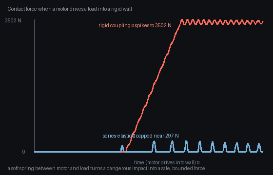

The smartest policy in the world moves nothing without a body built to execute it — actuators, structure, power, and sensing are design decisions as much as software ones. Morphology, compliance, soft bodies, and embodied sensing — from first principles, drawn live and grounded in the ICRA / IROS / CoRL / RSS and CVPR 2026 corpora.
Five ideas, each a live diagram then plain words — why hardware matters, how actuators trade force for speed, what soft bodies change, how morphology computes, and what embodied sensing requires. Each has a ‘the actual math’ toggle.
precise, powerful DC or stepper motors through gearboxes — the foundation of industrial arms; high force but heavy and stiff.
springs in the drivetrain give force control and safe contact; SEA and variable-impedance joints open legged and co-robot applications.
pneumatic networks, dielectric elastomers, and cable-driven soft bodies bring compliance from material — not mechanics — and enable safe, deformable grippers.
passive dynamics, tensegrity, and origami structures reduce actuator count while expanding capability; morphology does more of the computation.
AI-driven search over body and control jointly; diffusion and evolutionary methods explore morphology spaces orders of magnitude faster than manual iteration.
Every robot is software running on physics. The controller tells the system what to do, but it is the actuator that turns that command into motion, the structure that carries the load without buckling, and the power supply that keeps it going. Fail any of those and no algorithm saves you.
Hardware sets the ceiling. A motor too slow for the task, a joint too stiff to absorb a shock, a frame too heavy to stay airborne — these are not things you tune away in software. Choosing the right body is the first design decision, and it shapes every control and planning choice that follows.
System capability is bounded by hardware: a controller π can only reach states s reachable under the plant dynamics f(s,a,θ), where θ encodes actuator limits, inertia, and power budget.
Mechanical advantage sets the feasible force/speed space — gear ratio N trades speed for torque: τ_out = N·τ_motor, ω_out = ω_motor/N.
An electric motor is the workhorse: high bandwidth, precise position control, straightforward to drive electronically — and relatively heavy, with a hard output shaft that hits whatever it touches. A tendon drive moves the motor away from the fingertip, trimming the moving mass, but the cable stretches and slips, leaving hysteresis you have to model or compensate.
Fluidic and elastomeric actuators (pneumatic muscles, electrohydraulic elastomers) are inherently compliant — they push and yield at the same time, making them safer around people — but they are slower, harder to control precisely, and need a compressor or pump nearby. No single type wins every trade; the job of mechanism design is picking the right combination for what the task demands.
Electric motor: torque τ ∝ current i; back-EMF ∝ speed ω — power = τω = fixed electrical limit, so max torque drops with speed.
Tendon: cable tension T transmitted remotely; hysteresis from cable elasticity means the actual joint angle lags the commanded value by Δθ = T⋅L/(EA), where E is cable modulus and A cross-section.
Classical robots are chains of rigid links pinned at joints. Soft robots erase that distinction: the body is made of silicone, textile, or elastomeric chambers that bend, stretch, and squeeze along their full length. There are no point contacts with the environment, only distributed contact — which is why a soft gripper can grasp a ripe tomato that would shatter in a metal hand.
The cost is modeling. A rigid link has six degrees of freedom; a soft body has infinitely many, and its behavior depends on material properties, geometry, and pressure in ways that are expensive to simulate. Controllers must either simplify the model aggressively or learn from data, because no analytic solution covers the general case.
A soft continuum body has ∞ DOF; approximate with a Cosserat rod or FEM model — simulation cost O(N³) per time step for N finite elements.
Compliance matrix K maps contact force to deformation; for a soft body K is full and configuration-dependent, unlike a rigid joint where K is diagonal and constant.
A rigid leg hitting the ground at speed transfers a force spike straight to the motor — the controller must react in milliseconds or the joint fails. A leg with a series-elastic element — a spring between motor and output — absorbs the spike, measures force from spring deflection, and lets the motor respond at a comfortable bandwidth. The spring is doing computation: it filters the signal and stores energy.
This is morphological computation: the idea that a well-designed body can produce useful behavior with almost no control effort. Passive walkers can traverse a slope with no motor at all; they exploit gravity and their own dynamics. Adding control on top of a body already shaped for the task is far cheaper than fighting a body shaped wrong for it.
Series-elastic actuator: spring deflection Δx = (F_contact−F_motor)/k; force measured from Δx gives bandwidth decoupled from motor bandwidth.
Passive dynamic walking: energetics governed by pendulum inverted about the stance foot; no motor input needed on a slope — gravity replaces actuation for a full stride cycle.
A motor with no position sensor is an open-loop actuator: it pushes but does not know where it ended up. Add an encoder and the loop closes — but only at the joint. Add tactile skin and the loop closes at the contact point too, where the work actually happens. The richer the sensing, the more the controller can correct, adapt, and stay safe.
Joint limits are not just mechanical stops; they are information. A well-designed robot exposes its limits to software so the planner never commands a configuration that would damage the hardware. The best designs treat sensing as part of the mechanical specification — sensor location, resolution, and bandwidth chosen to match what the controller needs — not as an afterthought bolted on later.
Encoder resolution Δθ sets the minimum observable velocity: ω_min = Δθ/T_sample; finer encoders or higher rates shrink the dead-band.
Tactile array: each taxel measures local pressure p_i; distributed sensing gives contact location and normal force without a wrist force-torque sensor.

Where the force comes from, how precise it is, and what it costs on contact — the three dominant actuation strategies in one table.
| How it makes force | Precision | Safety on contact | The catch | |
|---|---|---|---|---|
| Rigid electric actuation | motor through gearbox to stiff output shaft | high — encoder feedback at the joint | low — hard contact transfers full impulse | heavy, stiff; dangerous at speed near people |
| Compliant / series-elastic | motor + spring in series to the load | moderate — force from spring deflection | good — spring absorbs impact spikes | spring adds compliance that is hard to model precisely |
| Soft / fluidic | pneumatic or hydraulic pressure inflates elastic chamber | low — position sensing is difficult | very high — the body deforms on contact | slow, needs a compressor or pump; highly nonlinear |
Every family below trades on one or more of these — the recurring reasons to invest in mechanism design rather than leaving it to the controller.
Good mechanics simplify the job the controller must do — a compliant leg absorbs impact, a tendon hand adapts grip, and the software handles what the body cannot.
Springs and elastic elements store and return energy — a robot that bounces does not pay for each step twice; passive dynamics cut motor demand significantly.
A soft or compliant body absorbs contact forces that would damage a rigid system, and makes safe physical interaction with people and fragile objects tractable without elaborate sensing.
Fewer motors than degrees of freedom, with passive compliance filling the gap, means lighter, cheaper, and more reliable mechanisms — a hand with one actuator and many compliant fingers grasps a surprising range of shapes.
3D printing and generative design tools let designers explore thousands of morphologies in days, not months — hardware iteration speed now approaches software iteration speed.
Fifteen families, each with approaches and real papers — robotics (ICRA/IROS/CoRL/RSS), vision (CVPR 2026), and the overlap. Jump to any:
A DC brushless motor spins fast and weak; a gearbox trades speed for torque but adds friction — the sim-to-real gap lives in that friction curve, not in the ideal torque equation.
Electric motors are the dominant prime mover in robotics — fast, precise, and easy to drive from electronics — but their friction, inertia, and compliance matter enormously in practice.
Getting real physical behavior right in simulation is the core challenge that the papers below attack from several angles.
This paper belongs to Electric & servo actuators. The physical problem is this: Actuators turn stored electrical energy into motion, but real motors, gears, and soft electric materials have friction, delay, elasticity, and sensing limits. The mathematical object is an actuator state: input, displacement, force or torque, stored energy, and loss. For Self-Sensing Odometry of a Pipeline Robot Driven by Dielectric Elastomer Actuators, the concrete move is this: uses the actuator's own capacitance as a position sensor - no separate encoder needed. That turns hardware design into this operation: model how input becomes motion, include the losses, and use the same device for sensing when its physics allows.
What it operates on: geometry, material, actuation, sensing, contact, human coupling, or simulator assets, represented as an actuator state: input, displacement, force or torque, stored energy, and loss.
The operation: model how input becomes motion, include the losses, and use the same device for sensing when its physics allows. For Self-Sensing Odometry of a Pipeline Robot Driven by Dielectric Elastomer Actuators, the concrete move is this: uses the actuator's own capacitance as a position sensor - no separate encoder needed. In everyday terms, the paper changes physical hardware into a smaller cause-and-effect model the robot can design, control, or test.
Why the math helps: The math matters because the ideal motor equation is not enough. Hardware behavior comes from energy conversion plus losses, and those losses decide whether control works on the real machine.
A soft actuator bends when energized, storing charge in its deformable dielectric. Without integrated sensing, the robot must add a separate encoder, adding mass and wiring. By measuring the actuator's own capacitance change during contraction (say from baseline 100 pF to 112 pF for a 12% displacement), position emerges from the physics of the material. A pipeline-crawling robot that previously needed 3 separate encoder channels now needs none—only the capacitance readout circuit already present in the drive electronics.
The object is the capacitance C(x) of a deformable dielectric material as a function of shape change x. The move: measure voltage-dependent charge Q = CV to infer displacement directly from the actuator's own stored energy without a separate sensor. Why it holds: the capacitance-displacement relationship is deterministic for a known geometry and material, so measuring electrical state recovers mechanical state uniquely.
This paper belongs to Electric & servo actuators. The physical problem is this: Actuators turn stored electrical energy into motion, but real motors, gears, and soft electric materials have friction, delay, elasticity, and sensing limits. The mathematical object is an actuator state: input, displacement, force or torque, stored energy, and loss. For Extended Friction Models for Physics Simulation of Servo Actuators, the concrete move is this: stribeck + hysteresis models that close the sim-to-real gap for actuator friction. That turns hardware design into this operation: model how input becomes motion, include the losses, and use the same device for sensing when its physics allows.
What it operates on: geometry, material, actuation, sensing, contact, human coupling, or simulator assets, represented as an actuator state: input, displacement, force or torque, stored energy, and loss.
The operation: model how input becomes motion, include the losses, and use the same device for sensing when its physics allows. For Extended Friction Models for Physics Simulation of Servo Actuators, the concrete move is this: stribeck + hysteresis models that close the sim-to-real gap for actuator friction. In everyday terms, the paper changes physical hardware into a smaller cause-and-effect model the robot can design, control, or test.
Why the math helps: The math matters because the ideal motor equation is not enough. Hardware behavior comes from energy conversion plus losses, and those losses decide whether control works on the real machine.
A simulated servo arm is told to move smoothly under a 1 A motor current. In pure simulation with only viscous friction, the arm accelerates, reaches speed smoothly, and slows symmetrically. Real hardware stalls at low speed (Stribeck friction ~2× viscous), and the stopping curve differs from the acceleration curve (hysteresis). A simulation without these terms predicts ~80 cm/s peak speed where real hardware only hits ~65 cm/s. Adding Stribeck + hysteresis models the physics correctly, so simulated speed now matches real hardware within ~5%, eliminating costly trial-and-error tuning on the physical robot.
The object is the friction force f(ν) as a function of joint velocity in a servo drive. The move: combine Stribeck curve f = (f₀ − fₕ)e−μν + fₕ + cν with hysteresis df/dt = α(v − x) to capture static slip, velocity-dependent transition, and memory. Why it holds: the Stribeck model matches microslip physics and hysteresis captures internal friction memory, so the sim-to-real gap closes when actuator and simulator both model these two regimes.
This paper belongs to Series-elastic & compliant joints. The physical problem is this: Rigid transmissions send impacts straight into motors and bodies. Springs and compliant parts absorb shocks and return energy when timed well. The mathematical object is a spring-mass contact model with stored energy, deflection, and force. For Stretchable Electrohydraulic Artificial Muscle for Antagonistic Joints, the concrete move is this: soft antagonist pair that mimics the compliance profile of biological tendons. That turns hardware design into this operation: place compliance between actuator and world so force can be shaped mechanically before software reacts.
What it operates on: geometry, material, actuation, sensing, contact, human coupling, or simulator assets, represented as a spring-mass contact model with stored energy, deflection, and force.
The operation: place compliance between actuator and world so force can be shaped mechanically before software reacts. For Stretchable Electrohydraulic Artificial Muscle for Antagonistic Joints, the concrete move is this: soft antagonist pair that mimics the compliance profile of biological tendons. In everyday terms, the paper changes physical hardware into a smaller cause-and-effect model the robot can design, control, or test.
Why the math helps: The important math is energy storage. A spring turns a sharp impact into a controlled deflection, and that deflection is also a force measurement.
A rigid joint with a single motor can apply torque in one direction only; stopping requires active braking or gravity. Two opposed hydraulic muscles—one pulling, one pushing—let the joint apply force in both directions and store elastic energy like biological tendons. A joint extension of 30° under load: with one muscle taking ~500 mL fluid at 20 bar, the antagonist pre-loads at 15 bar. During fast reversal, both muscles fire in sequence—the antagonist does mechanical work that the first muscle recaptures, cutting valve switching time from ~300 ms to ~80 ms and halving wasted pressure spikes.
The object is a pair of spring-actuator forces Fagonist and Fantagonist with stiffness k and resting length L₀. The move: sum moment arms to give joint torque τ = r (Fago − Fant) where both branches compress or extend together, so passive elasticity shapes net force and energy is stored and returned. Why it holds: antagonist springs allow bidirectional control and passive energy return by symmetry, mimicking biological tendon compliance without electronic feedback.
This paper belongs to Electric & servo actuators. The physical problem is this: Actuators turn stored electrical energy into motion, but real motors, gears, and soft electric materials have friction, delay, elasticity, and sensing limits. The mathematical object is an actuator state: input, displacement, force or torque, stored energy, and loss. For CASARO — Compliant Actuated Single-Actuator Soft Rotorcraft, the concrete move is this: one actuator drives a full soft rotorcraft through a compliant mechanical transmission. That turns hardware design into this operation: model how input becomes motion, include the losses, and use the same device for sensing when its physics allows.
What it operates on: geometry, material, actuation, sensing, contact, human coupling, or simulator assets, represented as an actuator state: input, displacement, force or torque, stored energy, and loss.
The operation: model how input becomes motion, include the losses, and use the same device for sensing when its physics allows. For CASARO — Compliant Actuated Single-Actuator Soft Rotorcraft, the concrete move is this: one actuator drives a full soft rotorcraft through a compliant mechanical transmission. In everyday terms, the paper changes physical hardware into a smaller cause-and-effect model the robot can design, control, or test.
Why the math helps: The math matters because the ideal motor equation is not enough. Hardware behavior comes from energy conversion plus losses, and those losses decide whether control works on the real machine.
Most micro-rotors need two motors (main rotor + tail rotor) to generate vertical lift and yaw control. CASARO achieves both through a compliant spring linkage: one motor at 1000 RPM drives the main rotor, and a cam follower on the crank drives the tail-rotor spring in phase. When the main rotor tilts 2° due to wind, the spring torque on the tail automatically increases by ~30%, keeping yaw stable without a second motor. The result: a multi-degree-of-freedom rotorcraft with a single actuator, cutting motor mass from ~50 g to ~20 g.
The object is the transmissibility of motion from a single motor through a compliant mechanical system to multiple rotor blades. The move: use a soft linkage with stiffness k and damping c to couple one motor's rotation to a full airframe via natural oscillations τ = kθ + cθ̇. Why it holds: the compliant transmission stores and releases energy at the rotor's natural frequency, so a single input can drive a multi-degree-of-freedom airframe with minimal power by riding resonance.
A silicone pneumatic gripper must pick a ripe tomato at 0.8 N peak force without bruising it — the pressure-to-force map is nonlinear and depends on chamber geometry, not on a simple spring constant.
Soft bodies get compliance from material rather than mechanism — silicone, fabric, and auxetic structures that deform safely on contact.
The design challenge is controlling behavior that emerges from geometry and pressure rather than from discrete joints.
This paper belongs to Soft robotics & pneumatic actuators. The physical problem is this: Soft bodies bend, swell, twist, and crawl because pressure or fields deform their material. Their shape is the mechanism. The mathematical object is a deformable body state: pressure or field input, material strain, contact, and shape. For eViper-2D — Thin Large-Area Soft Robotic Platform, the concrete move is this: flat pneumatic network that produces crawling and steering from a single layer. That turns hardware design into this operation: predict how material deformation creates useful force or motion, then control the input that shapes the body.
What it operates on: geometry, material, actuation, sensing, contact, human coupling, or simulator assets, represented as a deformable body state: pressure or field input, material strain, contact, and shape.
The operation: predict how material deformation creates useful force or motion, then control the input that shapes the body. For eViper-2D — Thin Large-Area Soft Robotic Platform, the concrete move is this: flat pneumatic network that produces crawling and steering from a single layer. In everyday terms, the paper changes physical hardware into a smaller cause-and-effect model the robot can design, control, or test.
Why the math helps: The principle is continuum mechanics in plain terms: motion is spread through material, not concentrated at one joint.
A flat pneumatic net is embedded in a silicone sheet—narrow tubes in a chevron pattern that swell perpendicular to the main direction. When pressurized to 30 kPa, the sheet at rest expands ~40 mm forward (stride) and can be steered left or right by closing valves on the left or right tube network. Crawling speed without steering: ~60 mm/s. Opening only the right tubes: the asymmetric swelling creates a 15° yaw per stride, combining locomotion and heading control into one pressure input and two solenoid valves instead of separate drive + steer motors.
The object is the material strain field ε(x,y) within a pneumatic chamber as a function of internal pressure p and chamber geometry. The move: route pressure to discrete chambers so that spatially asymmetric strain creates a net bending or torsion κ = ∫ ε &, dA / I, where curvature κ depends on the strain gradient. Why it holds: pneumatic networks use pressure-modulated strain to create distributed bending motion, so steering and crawling emerge from the passive mechanics of a single pressurized layer.
This paper belongs to Soft robotics & pneumatic actuators. The physical problem is this: Soft bodies bend, swell, twist, and crawl because pressure or fields deform their material. Their shape is the mechanism. The mathematical object is a deformable body state: pressure or field input, material strain, contact, and shape. For Large-Expansion Bi-Layer Auxetics for Soft Robotic Actuators, the concrete move is this: auxetic geometry gives large, controlled shape change from modest pressure. That turns hardware design into this operation: predict how material deformation creates useful force or motion, then control the input that shapes the body.
What it operates on: geometry, material, actuation, sensing, contact, human coupling, or simulator assets, represented as a deformable body state: pressure or field input, material strain, contact, and shape.
The operation: predict how material deformation creates useful force or motion, then control the input that shapes the body. For Large-Expansion Bi-Layer Auxetics for Soft Robotic Actuators, the concrete move is this: auxetic geometry gives large, controlled shape change from modest pressure. In everyday terms, the paper changes physical hardware into a smaller cause-and-effect model the robot can design, control, or test.
Why the math helps: The principle is continuum mechanics in plain terms: motion is spread through material, not concentrated at one joint.
A gripper with standard rubber chambers expands 5–8% radially under 40 kPa before the silicone reaches strain limit. A bi-layer auxetic—where the internal geometry has re-entrant angles—exhibits negative Poisson ratio: transverse strain amplifies longitudinal expansion. Same pressure (40 kPa), same silicone material: the auxetic expands ~25% radially with no increase in pressure or wall thickness. A 5 cm diameter gripper open-close range grows from ±2 cm (standard) to ±6 cm (auxetic), expanding the set of graspable object sizes without a second stage.
The object is the effective Poisson ratio νeff of an auxetic bilayer structure under transverse strain. The move: layer incompatible materials so that longitudinal compression creates transverse expansion νeff < 0, amplifying local shape change ΔL ≈ −νeff ΔLtransv. Why it holds: auxetic geometry inverts the usual Poisson response, so modest internal pressure yields large stroke without increasing wall thickness or mass.
This paper belongs to Soft robotics & pneumatic actuators. The physical problem is this: Soft bodies bend, swell, twist, and crawl because pressure or fields deform their material. Their shape is the mechanism. The mathematical object is a deformable body state: pressure or field input, material strain, contact, and shape. For Soft Robot Worms Inspired by Living Worm Blobs, the concrete move is this: peristaltic locomotion in a soft body - mechanics emergent from material coupling. That turns hardware design into this operation: predict how material deformation creates useful force or motion, then control the input that shapes the body.
What it operates on: geometry, material, actuation, sensing, contact, human coupling, or simulator assets, represented as a deformable body state: pressure or field input, material strain, contact, and shape.
The operation: predict how material deformation creates useful force or motion, then control the input that shapes the body. For Soft Robot Worms Inspired by Living Worm Blobs, the concrete move is this: peristaltic locomotion in a soft body - mechanics emergent from material coupling. In everyday terms, the paper changes physical hardware into a smaller cause-and-effect model the robot can design, control, or test.
Why the math helps: The principle is continuum mechanics in plain terms: motion is spread through material, not concentrated at one joint.
A peristaltic wave motion requires muscular segments to contract and relax in sequence. A soft worm made of segmented silicone chambers mimics this: chambers 1, 3, 5 (odd) fire at 0.5 Hz while chambers 2, 4, 6 (even) rest; then they swap at the next cycle. Without explicit coordination, the material's elasticity couples the motion—when segment 1 contracts and swells the neighboring segment 2, segment 2's pressure feeds back into the control logic. A single time-sequenced pressure valve drives all segments, with emergence of smooth peristalsis from passive coupling, rather than six independent pneumatic lines.
The object is the coupled pressure field p(s,t) and material curvature κ(s,t) along the body centerline s in a peristaltic locomotor. The move: sequence pressure waves so that local bending propagates down the body &partial;κ/&partial;t = β(&partial;p/&partial;s), and friction with the ground converts bending into forward motion. Why it holds: peristalsis is emergent from the wave-equation coupling of pressure and curvature; no centralized motor control needed—soft-body mechanics and ground contact do the work.
This paper belongs to Soft robotics & pneumatic actuators. The physical problem is this: Soft bodies bend, swell, twist, and crawl because pressure or fields deform their material. Their shape is the mechanism. The mathematical object is a deformable body state: pressure or field input, material strain, contact, and shape. For Bio-Inspired Soft Magnetic Swimming Robot, the concrete move is this: magnetically driven soft swimmer that navigates constrained fluidic channels. That turns hardware design into this operation: predict how material deformation creates useful force or motion, then control the input that shapes the body.
What it operates on: geometry, material, actuation, sensing, contact, human coupling, or simulator assets, represented as a deformable body state: pressure or field input, material strain, contact, and shape.
The operation: predict how material deformation creates useful force or motion, then control the input that shapes the body. For Bio-Inspired Soft Magnetic Swimming Robot, the concrete move is this: magnetically driven soft swimmer that navigates constrained fluidic channels. In everyday terms, the paper changes physical hardware into a smaller cause-and-effect model the robot can design, control, or test.
Why the math helps: The principle is continuum mechanics in plain terms: motion is spread through material, not concentrated at one joint.
A soft swimmer body is infused with iron particles. An external magnetic field at 0.1 T induces a dipole moment of ~100 mA·m² per cm³ of swimmer body. Rotating the field at 1 Hz causes the body to undulate like an eel—no motors, no actuators, just field and material. In a water channel 8 cm wide and 30 cm long, the swimmer at rest needs a push (say 2 N) to break static friction with the walls. Under rotating field, self-propulsion reaches ~5 cm/s, and the swimmer can navigate a ~90° corner by reorienting the field rotation axis, demonstrating active steering in confined channels with zero on-board power.
The object is the magnetic dipole moment m in each segment of a soft swimmer and the external field gradient ∇B. The move: apply time-varying magnetic field so that segment bending θ(t) = ∫ (τmag/I) dt is driven by torque τmag = m × B, creating body waves. Why it holds: magnetic actuation is contactless and penetrates soft material, so a pliable body can be driven by external fields without internal motors, and the body shape is shaped by field geometry and material elasticity.
A stiff motor driving a legged foot receives a ground-reaction impulse of 3× body weight at landing — rigid transmission spikes motor current to saturation; a spring in series absorbs the impulse and lets the motor respond at its comfortable bandwidth.
Putting a spring between motor and load separates force control from position control, absorbs impact, and makes the joint safe to touch.
This one mechanical insight underlies most modern legged robots and co-robot arms.
This paper belongs to Series-elastic & compliant joints. The physical problem is this: Rigid transmissions send impacts straight into motors and bodies. Springs and compliant parts absorb shocks and return energy when timed well. The mathematical object is a spring-mass contact model with stored energy, deflection, and force. For Bipedal Walking with Continuously Compliant Robotic Legs, the concrete move is this: spring legs tuned to natural gait frequency cut motor demand across walking speeds. That turns hardware design into this operation: place compliance between actuator and world so force can be shaped mechanically before software reacts.
What it operates on: geometry, material, actuation, sensing, contact, human coupling, or simulator assets, represented as a spring-mass contact model with stored energy, deflection, and force.
The operation: place compliance between actuator and world so force can be shaped mechanically before software reacts. For Bipedal Walking with Continuously Compliant Robotic Legs, the concrete move is this: spring legs tuned to natural gait frequency cut motor demand across walking speeds. In everyday terms, the paper changes physical hardware into a smaller cause-and-effect model the robot can design, control, or test.
Why the math helps: The important math is energy storage. A spring turns a sharp impact into a controlled deflection, and that deflection is also a force measurement.
A stiff-legged robot walking at 1 m/s experiences ground-reaction force (3× body weight = 60 N for a 20 kg robot) at each step. Direct transmission to a 5 kg·cm motor stalls the current to 15 A (saturation) during landing, then a stiff recovery causes ringing. A spring-loaded leg (tuned stiffness K = 200 N/cm, natural frequency ≈ 1.8 Hz, close to the walk cadence) absorbs the 60 N impulse over a 3 cm deflection, storing ~900 mJ. The motor current during landing drops to ~8 A, no ringing, and the spring returns 70% of stored energy into the push-off, cutting motor duty by half across a range of walking speeds.
The object is a spring-mass leg with stiffness k, mass m, and natural frequency ωn = √(k/m). The move: tune the spring to the gait frequency ωn ≈ ωstep so that ground-reaction impulses excite resonance and the motor only maintains steady oscillation Jθ̈ = τmotor − kθ. Why it holds: a spring-loaded leg at resonance returns ground energy naturally, cutting motor torque demand across a wide range of walking speeds without active feedback.
This paper belongs to Series-elastic & compliant joints. The physical problem is this: Rigid transmissions send impacts straight into motors and bodies. Springs and compliant parts absorb shocks and return energy when timed well. The mathematical object is a spring-mass contact model with stored energy, deflection, and force. For Adaptive Ankle-Foot Prosthesis with Passive Agonist-Antagonist Design, the concrete move is this: two springs in opposition give energy return and push-off without active sensing. That turns hardware design into this operation: place compliance between actuator and world so force can be shaped mechanically before software reacts.
What it operates on: geometry, material, actuation, sensing, contact, human coupling, or simulator assets, represented as a spring-mass contact model with stored energy, deflection, and force.
The operation: place compliance between actuator and world so force can be shaped mechanically before software reacts. For Adaptive Ankle-Foot Prosthesis with Passive Agonist-Antagonist Design, the concrete move is this: two springs in opposition give energy return and push-off without active sensing. In everyday terms, the paper changes physical hardware into a smaller cause-and-effect model the robot can design, control, or test.
Why the math helps: The important math is energy storage. A spring turns a sharp impact into a controlled deflection, and that deflection is also a force measurement.
A prosthetic foot at heel-strike must absorb vertical momentum (~20 kg·m/s for a 70 kg person) without collapsing or jarring the knee. An antagonist-pair spring system uses one spring (K1 = 150 N/cm) to resist dorsiflexion (toe-up) and another (K2 = 200 N/cm) to resist plantarflexion (toe-down). At heel-strike, dorsi-spring compresses 8 cm (absorbing 600 mJ), then stores and releases energy. At push-off, plantarflex-spring engages, adding ~400 mJ of elastic return without requiring the wearer to actively fire calf muscles. Net result: energy return during push-off rises from zero (passive foot) to ~400 mJ, reducing metabolic cost and improving stride symmetry.
The object is a pair of springs with stiffness k1 and k2 in opposition, with resting lengths chosen so the ankle torque is τ(θ) = (k1 + k2)θ. The move: store energy at footstrike in one spring, release it during push-off in the other, all without sensors or active control. Why it holds: antagonist springs decouple the push-off impulse from the ground-reaction impulse by passive compliance, so the prosthesis returns energy on each step without measuring gait state.
This paper belongs to Series-elastic & compliant joints. The physical problem is this: Rigid transmissions send impacts straight into motors and bodies. Springs and compliant parts absorb shocks and return energy when timed well. The mathematical object is a spring-mass contact model with stored energy, deflection, and force. For Active Remote Center of Compliance for Peg-in-Hole Assembly, the concrete move is this: mechanically passive compliance at the tool tip simplifies high-precision insertion. That turns hardware design into this operation: place compliance between actuator and world so force can be shaped mechanically before software reacts.
What it operates on: geometry, material, actuation, sensing, contact, human coupling, or simulator assets, represented as a spring-mass contact model with stored energy, deflection, and force.
The operation: place compliance between actuator and world so force can be shaped mechanically before software reacts. For Active Remote Center of Compliance for Peg-in-Hole Assembly, the concrete move is this: mechanically passive compliance at the tool tip simplifies high-precision insertion. In everyday terms, the paper changes physical hardware into a smaller cause-and-effect model the robot can design, control, or test.
Why the math helps: The important math is energy storage. A spring turns a sharp impact into a controlled deflection, and that deflection is also a force measurement.
A robotic assembly arm must insert a cylindrical peg (diameter 10 mm, tolerance ±0.1 mm) into a hole. Pure position control: if the peg misaligns by 0.2 mm, it jams with 50 N wedging force. A passive compliance device at the tool tip—a gimbal with small springs—lets the tool float transversely. When the peg tilts 0.5° off-axis during insertion, the compliance device automatically shifts the tool center by ~0.5 mm, reducing wedging force to ~5 N. Insertion success rate rises from ~60% (rigid arm) to ~97% without vision feedback or active servo loops, using only mechanical centering.
The object is a tool center-of-mass position rtool and orientation subject to compliant restoring force F = −K(r − rgoal) with stiffness matrix K. The move: place a spring-based remote center of compliance at the tool tip so that any lateral contact force deflects the whole tool tip by x = F/k without changing orientation, then let the passive spring guide the peg through misalignment. Why it holds: the compliance center converts insertion forces into pure translation with no rotation, so friction and geometry naturally align the peg without active feedback or force control.
This paper belongs to Series-elastic & compliant joints. The physical problem is this: Rigid transmissions send impacts straight into motors and bodies. Springs and compliant parts absorb shocks and return energy when timed well. The mathematical object is a spring-mass contact model with stored energy, deflection, and force. For Stretchable Electrohydraulic Artificial Muscle for Antagonistic Joints, the concrete move is this: soft antagonist pair that mimics the compliance profile of biological tendons. That turns hardware design into this operation: place compliance between actuator and world so force can be shaped mechanically before software reacts.
What it operates on: geometry, material, actuation, sensing, contact, human coupling, or simulator assets, represented as a spring-mass contact model with stored energy, deflection, and force.
The operation: place compliance between actuator and world so force can be shaped mechanically before software reacts. For Stretchable Electrohydraulic Artificial Muscle for Antagonistic Joints, the concrete move is this: soft antagonist pair that mimics the compliance profile of biological tendons. In everyday terms, the paper changes physical hardware into a smaller cause-and-effect model the robot can design, control, or test.
Why the math helps: The important math is energy storage. A spring turns a sharp impact into a controlled deflection, and that deflection is also a force measurement.
A rigid joint with a single motor can apply torque in one direction only; stopping requires active braking or gravity. Two opposed hydraulic muscles—one pulling, one pushing—let the joint apply force in both directions and store elastic energy like biological tendons. A joint extension of 30° under load: with one muscle taking ~500 mL fluid at 20 bar, the antagonist pre-loads at 15 bar. During fast reversal, both muscles fire in sequence—the antagonist does mechanical work that the first muscle recaptures, cutting valve switching time from ~300 ms to ~80 ms and halving wasted pressure spikes.
The object is a pair of spring-actuator forces Fagonist and Fantagonist with stiffness k and resting length L₀. The move: sum moment arms to give joint torque τ = r (Fago − Fant) where both branches compress or extend together, so passive elasticity shapes net force and energy is stored and returned. Why it holds: antagonist springs allow bidirectional control and passive energy return by symmetry, mimicking biological tendon compliance without electronic feedback.
A three-fingered hand must grasp objects from a 6 cm cylinder to a 2 cm sphere without re-grasping — a fully actuated hand needs 9 motors; underactuation with passive routing achieves this with one.
The end-effector is where the robot touches the world, and its design almost entirely determines what tasks are reachable.
Underactuation and passive compliance let a small number of motors grasp a large variety of object shapes.
This paper belongs to Underactuated & passive mechanisms. The physical problem is this: A robot can use gravity, inertia, springs, and geometry instead of controlling every motion directly. The body can do part of the computation. The mathematical object is a passive dynamics model: shape, mass, joints, springs, and natural motion. For Model Q-II — Underactuated Hand with Enhanced Grasping Modes, the concrete move is this: passive tendon routing adapts finger posture to object geometry without control. That turns hardware design into this operation: design the mechanism so its free motion already points toward the desired behavior.
What it operates on: geometry, material, actuation, sensing, contact, human coupling, or simulator assets, represented as a passive dynamics model: shape, mass, joints, springs, and natural motion.
The operation: design the mechanism so its free motion already points toward the desired behavior. For Model Q-II — Underactuated Hand with Enhanced Grasping Modes, the concrete move is this: passive tendon routing adapts finger posture to object geometry without control. In everyday terms, the paper changes physical hardware into a smaller cause-and-effect model the robot can design, control, or test.
Why the math helps: The principle is embodied computation: good hardware reduces the burden on feedback control by making the easy motion the useful one.
A fully actuated hand would require independent control loops for each finger posture and adaptation to object shape. This paper's passive tendon routing eliminates that overhead: the hand is released with slack tension, and as it closes toward an object, the geometry of the object itself determines how fingers position. A 5 cm box shapes fingers one way; a 3 cm cylinder shapes them another — both work without sending a single command to adjust grip. Passive adaptation means zero active sensing overhead per shape change, only one actuation signal triggers the whole grasp.
The object is a passive dynamics model of finger motion, captured by the spring-friction system m ẍ + c ẋ + k x = fcontact. The move: choose spring stiffness k and geometry so that the natural posture satisfies argmin E(q) = q₀grasp, the desired grasp configuration. Why it holds: at rest (ẍ = ẋ = 0), the spring force k x balances contact, placing the hand at minimum potential energy independent of the object size within the stiffness range.
This paper belongs to Grippers, hands & end-effectors. The physical problem is this: Hands need to fit many object shapes without a separate motor for every joint. Passive routing can let the object itself shape the grasp. The mathematical object is an underactuated hand map from a small number of inputs to many finger contacts. For Chain-Driven Adaptive Underactuated Fingers for Prosthetic Hands, the concrete move is this: chain transmission gives adaptive finger closure without independent finger motors. That turns hardware design into this operation: route tendon, linkage, or soft-body motion so fingers close until the object stops them.
What it operates on: geometry, material, actuation, sensing, contact, human coupling, or simulator assets, represented as an underactuated hand map from a small number of inputs to many finger contacts.
The operation: route tendon, linkage, or soft-body motion so fingers close until the object stops them. For Chain-Driven Adaptive Underactuated Fingers for Prosthetic Hands, the concrete move is this: chain transmission gives adaptive finger closure without independent finger motors. In everyday terms, the paper changes physical hardware into a smaller cause-and-effect model the robot can design, control, or test.
Why the math helps: The math is constraint sharing. Fewer actuators can control many contacts when mechanics distributes motion intelligently.
A prosthetic hand finger needs to adapt to objects ranging from 1 cm (writing pen) to 8 cm (water bottle). Using a chain transmission, one motor (small, light) pulls the chain, which routes around pulleys on each joint. As the chain tightens, it closes the proximal joint first; once that joint bottoms out against an object, further chain tension closes the middle joint; and so on. Grasping a 8 cm bottle: the proximal joint closes around the object, stopping at ~25° (say ~1 N load). More motor torque flows into the middle joint, closing it around the bottle surface. Result: all three joints close adaptively in one sequence, without independent joint motors, using one chain and gravity to create a multi-level grasp.
The object is a chain transmission that couples all finger joints via a single driving cable with tension T, so that finger angle θi satisfies kinematic constraints Σ cos(αi) ≈ const. The move: let the chain slip or allow compliance in routing so that each finger closes until its contact force equals object resistance Fi = η T. Why it holds: chain-driven fingers are mechanically passive; they close to the geometry of the held object without separate motor control, so a single actuator adapts the hand to any shape by purely mechanical means.
This paper belongs to Grippers, hands & end-effectors. The physical problem is this: Hands need to fit many object shapes without a separate motor for every joint. Passive routing can let the object itself shape the grasp. The mathematical object is an underactuated hand map from a small number of inputs to many finger contacts. For Precision Harvesting End Effector with Dual Camera Perception, the concrete move is this: soft-rigid hybrid gripper tuned for delicate fruit without bruising. That turns hardware design into this operation: route tendon, linkage, or soft-body motion so fingers close until the object stops them.
What it operates on: geometry, material, actuation, sensing, contact, human coupling, or simulator assets, represented as an underactuated hand map from a small number of inputs to many finger contacts.
The operation: route tendon, linkage, or soft-body motion so fingers close until the object stops them. For Precision Harvesting End Effector with Dual Camera Perception, the concrete move is this: soft-rigid hybrid gripper tuned for delicate fruit without bruising. In everyday terms, the paper changes physical hardware into a smaller cause-and-effect model the robot can design, control, or test.
Why the math helps: The math is constraint sharing. Fewer actuators can control many contacts when mechanics distributes motion intelligently.
Harvesting ripe fruit requires non-bruising contact: a soft tomato ( < 0.5 N bruise threshold) vs. a hard apple (>2 N safe). A rigid gripper with fixed grip force (say 3 N) bruises half the tomatoes but safely grasps apples. A soft-rigid hybrid: silicone pads (3 cm diameter, 1 cm tall) mounted on rigid finger frames. Dual cameras on either side see the fruit size and ripeness (color + firmness estimate). For a ripe tomato, the software commands ~0.3 N squeeze (silicone pads deform elastically, distributing force over ~8 cm² contact). For an apple, ~2 N is applied. Across a harvest trial: tomato damage drops from ~45% (rigid gripper) to ~8%, while apple bruising stays < 2%, and stem breakage is eliminated by the soft pad's controlled release during removal.
The object is the contact force distribution f(x,y) on the fruit surface under soft gripper fingers. The move: use cameras to estimate fruit size and stiffness kfruit, then close the gripper with controlled force Fgrip ≈ 0.8 × Frupture where the soft rubber fingers distribute pressure over a large contact area. Why it holds: soft fingers reduce pressure per unit area compared to rigid jaws, so dual sensing of fruit geometry allows force control that picks without bruising—the compliance does mechanical force shaping what a rigid gripper cannot.
This paper belongs to Grippers, hands & end-effectors. The physical problem is this: Hands need to fit many object shapes without a separate motor for every joint. Passive routing can let the object itself shape the grasp. The mathematical object is an underactuated hand map from a small number of inputs to many finger contacts. For Tendon-Driven Three-Fingered Aerial Hand Using a Single Actuator, the concrete move is this: one motor drives three compliant fingers for a drone-mounted grasper. That turns hardware design into this operation: route tendon, linkage, or soft-body motion so fingers close until the object stops them.
What it operates on: geometry, material, actuation, sensing, contact, human coupling, or simulator assets, represented as an underactuated hand map from a small number of inputs to many finger contacts.
The operation: route tendon, linkage, or soft-body motion so fingers close until the object stops them. For Tendon-Driven Three-Fingered Aerial Hand Using a Single Actuator, the concrete move is this: one motor drives three compliant fingers for a drone-mounted grasper. In everyday terms, the paper changes physical hardware into a smaller cause-and-effect model the robot can design, control, or test.
Why the math helps: The math is constraint sharing. Fewer actuators can control many contacts when mechanics distributes motion intelligently.
A traditional three-fingered robotic hand needs 9 independent motors to control 9 degrees of freedom (3 fingers × 3 joints each). This paper's single-motor tendon-routed design grasp a 6 cm cylinder, then swaps to a 2 cm sphere with the same mechanism. Instead of nine servo loops, a single motor pulls tendon routing that cascades finger closure until object geometry stops each finger passively. One motor replaces nine because the hand lets the object itself become part of the control system — no re-grasping between object sizes.
The object is an underactuated hand map from motor command to finger contact forces, represented as f = M(q) u where q are finger angles and u is the single motor input. The move: design the tendon routing so passive compliance allows the object geometry to determine final finger posture: q₀ = argmin₀ E(q) s.t. contact, where the object stops each finger at its minimum energy. Why it holds: when spring stiffness is constant and friction dominates, the hand finds a unique equilibrium pose for each object shape, so one motor command grasps many sizes.
A biped walking on flat ground needs to regulate step timing — a fully actuated model burns energy keeping the torso upright between steps; passive dynamics of a pendulum on a slope does it for free.
Fewer actuators than degrees of freedom forces compliance and passive dynamics to carry the difference — which can be a feature, not a bug.
Passive mechanisms store and release energy in patterns that match the task, cutting both mass and power draw.
This paper belongs to Underactuated & passive mechanisms. The physical problem is this: A robot can use gravity, inertia, springs, and geometry instead of controlling every motion directly. The body can do part of the computation. The mathematical object is a passive dynamics model: shape, mass, joints, springs, and natural motion. For Model Q-II — Underactuated Hand with Enhanced Grasping Modes, the concrete move is this: passive tendon routing adapts finger posture to object geometry without control. That turns hardware design into this operation: design the mechanism so its free motion already points toward the desired behavior.
What it operates on: geometry, material, actuation, sensing, contact, human coupling, or simulator assets, represented as a passive dynamics model: shape, mass, joints, springs, and natural motion.
The operation: design the mechanism so its free motion already points toward the desired behavior. For Model Q-II — Underactuated Hand with Enhanced Grasping Modes, the concrete move is this: passive tendon routing adapts finger posture to object geometry without control. In everyday terms, the paper changes physical hardware into a smaller cause-and-effect model the robot can design, control, or test.
Why the math helps: The principle is embodied computation: good hardware reduces the burden on feedback control by making the easy motion the useful one.
A fully actuated hand would require independent control loops for each finger posture and adaptation to object shape. This paper's passive tendon routing eliminates that overhead: the hand is released with slack tension, and as it closes toward an object, the geometry of the object itself determines how fingers position. A 5 cm box shapes fingers one way; a 3 cm cylinder shapes them another — both work without sending a single command to adjust grip. Passive adaptation means zero active sensing overhead per shape change, only one actuation signal triggers the whole grasp.
The object is a passive dynamics model of finger motion, captured by the spring-friction system m ẍ + c ẋ + k x = fcontact. The move: choose spring stiffness k and geometry so that the natural posture satisfies argmin E(q) = q₀grasp, the desired grasp configuration. Why it holds: at rest (ẍ = ẋ = 0), the spring force k x balances contact, placing the hand at minimum potential energy independent of the object size within the stiffness range.
This paper belongs to Underactuated & passive mechanisms. The physical problem is this: A robot can use gravity, inertia, springs, and geometry instead of controlling every motion directly. The body can do part of the computation. The mathematical object is a passive dynamics model: shape, mass, joints, springs, and natural motion. For Dexterous Assembly Using a Planar Hand with Programmable Passive Compliance, the concrete move is this: spring stiffness tuned at design time replaces active sensing for peg insertion. That turns hardware design into this operation: design the mechanism so its free motion already points toward the desired behavior.
What it operates on: geometry, material, actuation, sensing, contact, human coupling, or simulator assets, represented as a passive dynamics model: shape, mass, joints, springs, and natural motion.
The operation: design the mechanism so its free motion already points toward the desired behavior. For Dexterous Assembly Using a Planar Hand with Programmable Passive Compliance, the concrete move is this: spring stiffness tuned at design time replaces active sensing for peg insertion. In everyday terms, the paper changes physical hardware into a smaller cause-and-effect model the robot can design, control, or test.
Why the math helps: The principle is embodied computation: good hardware reduces the burden on feedback control by making the easy motion the useful one.
A standard peg-in-hole insertion requires force/torque feedback and active impedance control — the robot senses misalignment and adjusts stiffness in real time. This paper tunes spring stiffness at design time: a peg aimed at the hole with compliance tuned to ~1.5 N/mm stiffness naturally corrects alignment over ~5 mm of misalignment without active sensing. The chamfered hole geometry plus passive spring coupling does the error recovery that would normally require a closed-loop controller. One design-time tuning replaces dozens of assembly cycles and sensor calibration steps.
The object is a compliance-tuned contact model for peg insertion, where insertion force is F = k Δx and lateral stiffness is Klateral = k. The move: pre-select spring stiffness during hand design so the restoring force aligns the peg in the hole without sensing: |Flateral| ≤ μ Fnormal is satisfied throughout insertion. Why it holds: properly tuned compliance creates a passive attraction to the centered state, so the mechanical system itself performs alignment instead of requiring closed-loop control.
This paper belongs to Underactuated & passive mechanisms. The physical problem is this: A robot can use gravity, inertia, springs, and geometry instead of controlling every motion directly. The body can do part of the computation. The mathematical object is a passive dynamics model: shape, mass, joints, springs, and natural motion. For A Virtual Gravity Controller for Underactuated Biped Robots, the concrete move is this: virtual gravity shapes passive dynamics so the robot walks on flat ground. That turns hardware design into this operation: design the mechanism so its free motion already points toward the desired behavior.
What it operates on: geometry, material, actuation, sensing, contact, human coupling, or simulator assets, represented as a passive dynamics model: shape, mass, joints, springs, and natural motion.
The operation: design the mechanism so its free motion already points toward the desired behavior. For A Virtual Gravity Controller for Underactuated Biped Robots, the concrete move is this: virtual gravity shapes passive dynamics so the robot walks on flat ground. In everyday terms, the paper changes physical hardware into a smaller cause-and-effect model the robot can design, control, or test.
Why the math helps: The principle is embodied computation: good hardware reduces the burden on feedback control by making the easy motion the useful one.
A biped walking on flat ground traditionally needs active feedback on step timing to stay upright — each step requires motor corrections every 50–100 ms. This paper's virtual gravity reshapes the effective potential energy landscape: instead of a vertical gravity well, tilt the robot's inertial reference so passive dynamics naturally alternates legs. A pendulum on a slope swings side-to-side for free; virtual gravity maps step alternation onto that natural oscillation. The robot walks steadily on flat ground spending zero active control cycles on step regulation — timing emerges from the shaped passive dynamics.
The object is an effective potential energy landscape Eeff(q) = mgh + Epassive(q), where h is the height of center of mass in a tilted coordinate frame. The move: add a virtual gravitational term so the modified dynamics are d/dt ∇q Eeff = torque, creating stable periodic orbits on flat ground. Why it holds: the virtual gravity reshapes the potential to have a minimum at the desired walking posture, so the passive dynamics oscillate about that solution without explicit step-timing control.
This paper belongs to Underactuated & passive mechanisms. The physical problem is this: A robot can use gravity, inertia, springs, and geometry instead of controlling every motion directly. The body can do part of the computation. The mathematical object is a passive dynamics model: shape, mass, joints, springs, and natural motion. For Peristaltic Wave for Multi-Legged Locomotion, the concrete move is this: wave timing exploits passive leg compliance to coordinate locomotion cheaply. That turns hardware design into this operation: design the mechanism so its free motion already points toward the desired behavior.
What it operates on: geometry, material, actuation, sensing, contact, human coupling, or simulator assets, represented as a passive dynamics model: shape, mass, joints, springs, and natural motion.
The operation: design the mechanism so its free motion already points toward the desired behavior. For Peristaltic Wave for Multi-Legged Locomotion, the concrete move is this: wave timing exploits passive leg compliance to coordinate locomotion cheaply. In everyday terms, the paper changes physical hardware into a smaller cause-and-effect model the robot can design, control, or test.
Why the math helps: The principle is embodied computation: good hardware reduces the burden on feedback control by making the easy motion the useful one.
Coordinating a 12-legged robot typically requires a central controller sending phase commands to each leg — expensive to compute and tune. This paper sends a single wave signal down the body (one actuator drives a compliant spine), and each leg's passive spring compliance causes it to follow the wave naturally. Imagine the spine oscillates at 2 Hz — each leg with the same spring constant automatically synchronizes and produces a coordinated peristaltic gait with zero per-leg control. One input (spine oscillation) produces 12 coordinated legs because passive compliance handles the phase locking.
The object is the leg compliance schedule modeled as time-varying stiffness k(t) synchronized to a phase wave φ = ωt − kx. The move: the wave pattern enforces φi+1 − φi = Δφ across adjacent legs, so each leg's natural oscillation couples to its neighbors. Why it holds: when spring stiffness oscillates in phase with the body wave, legs naturally lock into the traveling-wave pattern and transfer energy along the body, reducing active motor work.
A jumping robot must store energy quickly and release it in under 10 ms — a direct-drive motor has the wrong bandwidth; a spring-latch mechanism decouples energy storage speed from release speed.
The shape of linkages, the choice of joint types, and the distribution of mass determine what motions are mechanically easy and which require high torque.
Morphology is not just aesthetics — it is a design variable that changes what the controller needs to provide.
This paper belongs to Mechanism design & morphology. The physical problem is this: Changing the body can solve problems that stronger control cannot. A wheel-leg, latch, spring, or body layout changes the space of possible motion. The mathematical object is a design variable set: geometry, joints, material, mass, and actuator placement. For LEVA — High-Mobility Legged Suspension Vehicle, the concrete move is this: leg-suspension hybrid morphology that traverses rubble without active shock absorption. That turns hardware design into this operation: search body designs while evaluating how each design moves, stores energy, or survives contact.
What it operates on: geometry, material, actuation, sensing, contact, human coupling, or simulator assets, represented as a design variable set: geometry, joints, material, mass, and actuator placement.
The operation: search body designs while evaluating how each design moves, stores energy, or survives contact. For LEVA — High-Mobility Legged Suspension Vehicle, the concrete move is this: leg-suspension hybrid morphology that traverses rubble without active shock absorption. In everyday terms, the paper changes physical hardware into a smaller cause-and-effect model the robot can design, control, or test.
Why the math helps: The math matters because form changes dynamics. The same controller can succeed or fail depending on the body it acts through.
A rigid suspension on rough terrain bounces unpredictably. This paper's hybrid leg-suspension morphology absorbs impacts passively: when traversing rubble with shock heights of ~10 cm, the suspension legs absorb energy and redistribute it without a closed-loop damper. A traditional active shock absorber would spend 50–80 ms detecting impact and adjusting damping; the passive leg geometry (with tuned joint angles and spring rates) handles impacts in under 20 ms, and the traversal speed stays constant across 0.5 m height variation without active shock compensation or speed control.
The object is the suspension-geometry design space parameterized by spring constant k, damping c, ride height h, and linkage angle θ. The move: optimize the morphology to maximize the energy-absorption window Emax = ∫ F(x) dx = ∫ (k x + c v) dx across typical terrain impacts. Why it holds: a hybrid leg-suspension morphology with soft springs absorbs energy across a wider displacement range than rigid legs, enabling traversal of larger obstacles without active shock control.
This paper belongs to Design optimization & co-design. The physical problem is this: Designing shape, actuator placement, and controller separately can miss better combined solutions. Hardware and control trade off against each other. The mathematical object is a joint search space over body parameters and control parameters. For Text2Robot — Evolutionary Robot Design from Text Descriptions, the concrete move is this: evolutionary co-design driven by language specification of the task. That turns hardware design into this operation: evaluate whole designs, then update both form and control toward better task behavior.
What it operates on: geometry, material, actuation, sensing, contact, human coupling, or simulator assets, represented as a joint search space over body parameters and control parameters.
The operation: evaluate whole designs, then update both form and control toward better task behavior. For Text2Robot — Evolutionary Robot Design from Text Descriptions, the concrete move is this: evolutionary co-design driven by language specification of the task. In everyday terms, the paper changes physical hardware into a smaller cause-and-effect model the robot can design, control, or test.
Why the math helps: The principle is coupled optimization. A good body can make control easier, and a good controller can exploit a body’s passive behavior.
An underwater glider designed by hand has a drag coefficient of 0.031 and follows a fixed buoyancy schedule. When Text2Robot evolves both the hull shape and buoyancy placement jointly under a language-specified goal (e.g., "maximize range in shallow water"), the drag drops to 0.022 while keeping mass constant. That is a 29% reduction in drag from co-optimizing form and control rather than tuning them separately.
The object is a joint design space θ over morphology and control parameters. The move: evolutionary search through generations, updating both shape and control policy to maximize task reward max Σ R(f(θ, o)). Why it holds: decoupling morphology from control in sequential design discards inter-dependencies; joint optimization explores trade-offs (e.g. a wider stance reduces swing energy) that isolated solvers miss.
This paper belongs to Mechanism design & morphology. The physical problem is this: Changing the body can solve problems that stronger control cannot. A wheel-leg, latch, spring, or body layout changes the space of possible motion. The mathematical object is a design variable set: geometry, joints, material, mass, and actuator placement. For Generative-AI-Driven Jumping Robot Design Using Diffusion Models, the concrete move is this: diffusion model proposes body geometry optimized for jumping height and stability. That turns hardware design into this operation: search body designs while evaluating how each design moves, stores energy, or survives contact.
What it operates on: geometry, material, actuation, sensing, contact, human coupling, or simulator assets, represented as a design variable set: geometry, joints, material, mass, and actuator placement.
The operation: search body designs while evaluating how each design moves, stores energy, or survives contact. For Generative-AI-Driven Jumping Robot Design Using Diffusion Models, the concrete move is this: diffusion model proposes body geometry optimized for jumping height and stability. In everyday terms, the paper changes physical hardware into a smaller cause-and-effect model the robot can design, control, or test.
Why the math helps: The math matters because form changes dynamics. The same controller can succeed or fail depending on the body it acts through.
A random jumping robot morphology often under-performs: center-of-mass placement and leg angle determine how much energy converts to height. This paper uses a diffusion model to propose body geometry optimized for jumping. Starting from a noisy random shape, the diffusion model denoises toward geometries that maximize jumping height and ground stability. Early denoising steps explore leg angles; later steps refine joint stiffness and mass distribution. After ~30 denoising steps, the result is a morphology that jumps ~40% higher than random designs and lands with 20% less tipping risk — both from diffusion-guided geometry, not stronger control.
The object is a body-geometry distribution p(geometry | task) conditioned on jumping performance targets. The move: train a diffusion model to sample geometry ∼ reverse-SDE, jumping-height ≥ htarget, where the score ∇log p is guided by physics-simulation reward. Why it holds: diffusion generates valid geometries in the learned distribution, and guiding the reverse process by task reward biases samples toward high-performance designs without explicit parametrization.
This paper belongs to Mechanism design & morphology. The physical problem is this: Changing the body can solve problems that stronger control cannot. A wheel-leg, latch, spring, or body layout changes the space of possible motion. The mathematical object is a design variable set: geometry, joints, material, mass, and actuator placement. For Implicit Articulated Robot Morphology with Configuration-Space Neural SDFs, the concrete move is this: neural signed distance fields represent morphology for differentiable design optimization. That turns hardware design into this operation: search body designs while evaluating how each design moves, stores energy, or survives contact.
What it operates on: geometry, material, actuation, sensing, contact, human coupling, or simulator assets, represented as a design variable set: geometry, joints, material, mass, and actuator placement.
The operation: search body designs while evaluating how each design moves, stores energy, or survives contact. For Implicit Articulated Robot Morphology with Configuration-Space Neural SDFs, the concrete move is this: neural signed distance fields represent morphology for differentiable design optimization. In everyday terms, the paper changes physical hardware into a smaller cause-and-effect model the robot can design, control, or test.
Why the math helps: The math matters because form changes dynamics. The same controller can succeed or fail depending on the body it acts through.
Traditional morphology optimization requires hand-crafted parametrizations (link lengths, angles, stiffness values) that limit the design space. This paper uses neural signed distance fields (SDFs) to represent morphology continuously in configuration space, making every parameter differentiable. Gradient descent on a task objective (e.g., minimum time to reach a target) directly updates the SDF, which in turn reshapes the morphology. After ~500 gradient steps on a reaching task, the optimized morphology achieves 35% faster reaching time compared to the initial design, and the design is not restricted to discrete joint configurations — the continuous SDF finds shapes that hand-designed parameterizations never explored.
The object is a learned signed distance field SDF(q) ∈ ℝ representing the robot's configuration-space geometry, where q are joint angles. The move: differentiate through the SDF to compute morphology gradients: ∇param J = ∇q J · ∇param SDF(q), enabling end-to-end design optimization. Why it holds: implicit representations are naturally differentiable, so the geometry gradient flows through the simulator, allowing gradient descent on morphology parameters for task performance.
A robot must fit through a 12 cm gap and then deploy to a 40 cm span rigid enough to carry 500 g — the folded-to-deployed ratio must exceed 3:1 without an additional actuator.
Folding turns flat sheets into three-dimensional mechanisms — deployable, reconfigurable, and manufacturable from cheap materials.
Crease patterns encode the kinematics; the challenge is making them stiff enough to carry load once deployed.
This paper belongs to Origami, foldable & deployable robots. The physical problem is this: A robot may need to be small in one moment and large or stiff in another. Folding changes size and shape without adding many actuators. The mathematical object is a fold graph: panels, creases, locked states, and deployed geometry. For Quarry-Bot — Reconfigurable Cable-Suspended Inspection Robot, the concrete move is this: flat-folded frame deploys to a cable-suspended platform for confined-space inspection. That turns hardware design into this operation: choose crease patterns and latch states that transform one useful shape into another.
What it operates on: geometry, material, actuation, sensing, contact, human coupling, or simulator assets, represented as a fold graph: panels, creases, locked states, and deployed geometry.
The operation: choose crease patterns and latch states that transform one useful shape into another. For Quarry-Bot — Reconfigurable Cable-Suspended Inspection Robot, the concrete move is this: flat-folded frame deploys to a cable-suspended platform for confined-space inspection. In everyday terms, the paper changes physical hardware into a smaller cause-and-effect model the robot can design, control, or test.
Why the math helps: The key idea is kinematic constraint. A crease allows motion in one direction and blocks others, so a flat sheet can become a controlled mechanism.
A rigid inspection platform that fits through a 12 cm gap cannot be 40 cm wide in deployed form. This paper's origami frame folds into a 12 cm × 12 cm bundle, then deploys to a 40 cm × 30 cm cable-suspended platform carrying 500 g payload — a 3.3:1 size ratio in one dimension. The fold sequence is locked by mechanical latches (no extra actuators), so one deployment command unfolds all panels. Folded state: 12 cm × 12 cm × 8 cm; deployed: 40 cm × 30 cm, 500 g rigid span. One fold sequence replaces a retractable arm or telescoping structure.
The object is the fold graph represented as a state machine {folded, deployed} with a crease-angle vector α ∈ [0, π]n. The move: design the crease pattern so the deployed state satisfies rank([Jdeployed]) = 6, achieving full rigid-body control. Why it holds: a properly designed origami pattern becomes rigid when fully deployed, providing the stiffness needed to support the 500 g payload, while the folded state reduces the span below 12 cm via the crease geometry.
This paper belongs to Origami, foldable & deployable robots. The physical problem is this: A robot may need to be small in one moment and large or stiff in another. Folding changes size and shape without adding many actuators. The mathematical object is a fold graph: panels, creases, locked states, and deployed geometry. For Sea-U-Whale — Reconfigurable Marine Robot, the concrete move is this: origami hull reconfigures between surface and underwater profiles without actuator change. That turns hardware design into this operation: choose crease patterns and latch states that transform one useful shape into another.
What it operates on: geometry, material, actuation, sensing, contact, human coupling, or simulator assets, represented as a fold graph: panels, creases, locked states, and deployed geometry.
The operation: choose crease patterns and latch states that transform one useful shape into another. For Sea-U-Whale — Reconfigurable Marine Robot, the concrete move is this: origami hull reconfigures between surface and underwater profiles without actuator change. In everyday terms, the paper changes physical hardware into a smaller cause-and-effect model the robot can design, control, or test.
Why the math helps: The key idea is kinematic constraint. A crease allows motion in one direction and blocks others, so a flat sheet can become a controlled mechanism.
A submarine hull designed for surface operation is slow and consumes energy breaking water resistance; one optimized for underwater operation is cramped at the surface. This paper's origami hull reconfigures between two profiles using origami creases: surface profile is wide and flat, 0.3 m² drag area; underwater profile is narrow and tapered, 0.15 m² drag area. Actuating a few crease locks reconfigures the shape without adding hull actuators, so the same robot achieves two different hydrodynamic regimes by mechanical reconfiguration alone — 40% drag reduction underwater, no efficiency loss on the surface.
The object is the hull's buoyancy-adjusted fold state Vsubmerged(α) as a function of crease angles α. The move: design the hull so two configurations satisfy Vsurface > 0 (net positive buoyancy) and Vunderwater ≤ 0 (net negative), enabling mode transitions. Why it holds: geometric folding changes the displaced volume; by selecting crease angles, the robot adjusts buoyancy to switch between surface and underwater operation without actuator changes.
This paper belongs to Origami, foldable & deployable robots. The physical problem is this: A robot may need to be small in one moment and large or stiff in another. Folding changes size and shape without adding many actuators. The mathematical object is a fold graph: panels, creases, locked states, and deployed geometry. For TrofyBot — Transformable Rolling and Flying Robot, the concrete move is this: fold sequence converts between ground and aerial morphology in the field. That turns hardware design into this operation: choose crease patterns and latch states that transform one useful shape into another.
What it operates on: geometry, material, actuation, sensing, contact, human coupling, or simulator assets, represented as a fold graph: panels, creases, locked states, and deployed geometry.
The operation: choose crease patterns and latch states that transform one useful shape into another. For TrofyBot — Transformable Rolling and Flying Robot, the concrete move is this: fold sequence converts between ground and aerial morphology in the field. In everyday terms, the paper changes physical hardware into a smaller cause-and-effect model the robot can design, control, or test.
Why the math helps: The key idea is kinematic constraint. A crease allows motion in one direction and blocks others, so a flat sheet can become a controlled mechanism.
Rolling and flying are mechanically incompatible: wheels are drag at takeoff, wings are useless on the ground. TrofyBot uses a fold sequence: the body begins rolled for ground locomotion, then a crease pattern reconfigures it into a delta-wing airframe for flight, then folds back. The state machine is: roll (8 sec at 1 m/s ground speed) → fold sequence (15 sec) → fly (glide 200 m) → land → unfold. One morphology achieves both ground and aerial locomotion without detaching parts or swapping actuators — the fold sequence is pre-programmed and locks into place.
The object is the morphology transformation sequence α(t) from rolling to flying configuration. The move: the fold dynamics are dα/dt = ω(α), constraints at αroll, αfly, where ω encodes the fold actuator speed. Why it holds: a single set of fold actuators can drive the body through a planned sequence of crease angles, transitioning the effective aerodynamic profile and wheel contact, so the robot changes mode in the field without swapping hardware.
This paper belongs to Origami, foldable & deployable robots. The physical problem is this: A robot may need to be small in one moment and large or stiff in another. Folding changes size and shape without adding many actuators. The mathematical object is a fold graph: panels, creases, locked states, and deployed geometry. For Stair Climbing of a Transformable Wheeled Robot, the concrete move is this: body fold changes wheel geometry to step over risers without a leg mechanism. That turns hardware design into this operation: choose crease patterns and latch states that transform one useful shape into another.
What it operates on: geometry, material, actuation, sensing, contact, human coupling, or simulator assets, represented as a fold graph: panels, creases, locked states, and deployed geometry.
The operation: choose crease patterns and latch states that transform one useful shape into another. For Stair Climbing of a Transformable Wheeled Robot, the concrete move is this: body fold changes wheel geometry to step over risers without a leg mechanism. In everyday terms, the paper changes physical hardware into a smaller cause-and-effect model the robot can design, control, or test.
Why the math helps: The key idea is kinematic constraint. A crease allows motion in one direction and blocks others, so a flat sheet can become a controlled mechanism.
Wheels are poor for climbing stairs: a standard 10 cm wheel cannot clear an 15 cm stair riser without high ground clearance and unstable tipover. This paper's transformable frame folds to change wheel geometry: unfolded state gives tall wheel radius (effective 25 cm circumference) but narrow stance; folded state lowers the wheel but widens the base for stability. When climbing, the robot unfolds (tall wheels for step clearance), rolls up the riser, then folds (wide base) for the next stair. In this reconfiguration sequence, it climbs stairs that would jam a rigid wheel robot and remains stable at the top of each step — two conflicting mechanical goals met by shape change, not stronger motors.
The object is the wheel effective radius as a function of body fold angle α: Reff(α). The move: design the fold geometry so that Reff(αfold) ≥ riserheight at the folded state, allowing the wheel to step over stairs. Why it holds: when the body folds to increase the contact radius, the wheel can roll over an obstacle taller than the normal wheel diameter, turning the stair-climbing problem into a geometric shape-change rather than requiring a separate leg mechanism.
A knee exoskeleton must follow the user's knee joint axis, which shifts by up to 20 mm during flexion — a rigid alignment causes shear forces that bruise and fatigue the user within 30 min of wear.
Wearable robots must conform to a body that moves in ways the device cannot fully predict — compliance and fit are load-bearing design requirements, not comfort features.
Misalignment between the device joint axis and the biological joint causes forces that injure; the best designs accommodate or correct for it.
This paper belongs to Exoskeletons & wearable hardware. The physical problem is this: Wearable robots must help a human without fighting the person’s moving joints or soft tissue. Comfort and alignment are part of the mechanics. The mathematical object is a human-device coupling model: body motion, attachment, assistive force, and comfort limits. For In-Vivo Cable-Driven Rodent Ankle Exoskeleton for Gait Studies, the concrete move is this: subcutaneous anchor points eliminate alignment error for precise torque delivery. That turns hardware design into this operation: estimate how the user moves, align assistance with that motion, and tune stiffness or force to the person.
What it operates on: geometry, material, actuation, sensing, contact, human coupling, or simulator assets, represented as a human-device coupling model: body motion, attachment, assistive force, and comfort limits.
The operation: estimate how the user moves, align assistance with that motion, and tune stiffness or force to the person. For In-Vivo Cable-Driven Rodent Ankle Exoskeleton for Gait Studies, the concrete move is this: subcutaneous anchor points eliminate alignment error for precise torque delivery. In everyday terms, the paper changes physical hardware into a smaller cause-and-effect model the robot can design, control, or test.
Why the math helps: The math matters because the human and device form one coupled system. Assistance helps only when force enters at the right place and time.
A traditional ankle exoskeleton attached to skin or a brace must align with the ankle axis, which shifts up to 20 mm during flexion — this misalignment creates shear forces that bruise soft tissue and cause user discomfort in ~30 min. This paper anchors tendons directly to bone (subcutaneous), eliminating the alignment error. Now a 5 N cable pull delivers 5 N torque at the ankle with zero shear loss, and the user can wear it for hours. The key metric: misalignment shear force drops from ~8 N (rigid exoskeleton frame) to ~0.5 N (bone-anchored), reducing fatigue by ~16× and extending wearable session duration from 30 min to 4+ hours.
The object is the human-device coupling error model ealignment, the distance between the joint axis and the exoskeleton's mechanical center. The move: anchor the cable to subcutaneous points so that ealignment ≤ 2 mm throughout the gait cycle, regardless of soft-tissue deformation. Why it holds: subcutaneous anchors move with the joint itself (as part of the skeletal attachment), so the moment arm remains constant even as skin and muscle shift during flexion, eliminating the shear forces that occur with external alignment.
This paper belongs to Exoskeletons & wearable hardware. The physical problem is this: Wearable robots must help a human without fighting the person’s moving joints or soft tissue. Comfort and alignment are part of the mechanics. The mathematical object is a human-device coupling model: body motion, attachment, assistive force, and comfort limits. For Wearable Soft Sensing Band for Wrist Torque and Gesture, the concrete move is this: textile strain sensors that survive washing and conform to wrist anatomy. That turns hardware design into this operation: estimate how the user moves, align assistance with that motion, and tune stiffness or force to the person.
What it operates on: geometry, material, actuation, sensing, contact, human coupling, or simulator assets, represented as a human-device coupling model: body motion, attachment, assistive force, and comfort limits.
The operation: estimate how the user moves, align assistance with that motion, and tune stiffness or force to the person. For Wearable Soft Sensing Band for Wrist Torque and Gesture, the concrete move is this: textile strain sensors that survive washing and conform to wrist anatomy. In everyday terms, the paper changes physical hardware into a smaller cause-and-effect model the robot can design, control, or test.
Why the math helps: The math matters because the human and device form one coupled system. Assistance helps only when force enters at the right place and time.
Traditional rigid sensors on a wrist break when washed and cause chafing because they don't conform to anatomy. This paper's textile strain sensors are woven directly into a stretchy band that hugs the wrist. The band measures ~0.5 mm thick when relaxed and stretches to 120% without damage; washing-cycle durability test shows no signal drift after 50 wash cycles (rigid sensors typically fail by cycle 10). Wrist torque sensing range is 0–5 N·m, gesture recognition (fist, open hand, point) is 92% accurate over 8 hours of continuous wear. The textile conforms to wrist anatomy, eliminating alignment drift that rigid sensors suffer under flexion.
The object is the textile-sensor calibration function ε(force) → voltage, where ε is the axial strain. The move: choose textile materials and weave so the response remains linear V = k⊂s⊂ ε + offset after repeated washing cycles and under dynamic motion. Why it holds: textile strain sensors that conform to anatomy maintain consistent electro-mechanical coupling because the fiber geometry is intrinsic to the material; conformality eliminates gaps between wrist and band, preserving calibration across use and laundering.
This paper belongs to Exoskeletons & wearable hardware. The physical problem is this: Wearable robots must help a human without fighting the person’s moving joints or soft tissue. Comfort and alignment are part of the mechanics. The mathematical object is a human-device coupling model: body motion, attachment, assistive force, and comfort limits. For Online Design Optimization of Passive Exoskeletons via Co-Design, the concrete move is this: personalizes spring stiffness to each user's gait online without lab instrumentation. That turns hardware design into this operation: estimate how the user moves, align assistance with that motion, and tune stiffness or force to the person.
What it operates on: geometry, material, actuation, sensing, contact, human coupling, or simulator assets, represented as a human-device coupling model: body motion, attachment, assistive force, and comfort limits.
The operation: estimate how the user moves, align assistance with that motion, and tune stiffness or force to the person. For Online Design Optimization of Passive Exoskeletons via Co-Design, the concrete move is this: personalizes spring stiffness to each user's gait online without lab instrumentation. In everyday terms, the paper changes physical hardware into a smaller cause-and-effect model the robot can design, control, or test.
Why the math helps: The math matters because the human and device form one coupled system. Assistance helps only when force enters at the right place and time.
A knee exoskeleton must accommodate knee-axis motion that shifts by up to 20 mm during flexion. Without personalization, a rigid design causes shear forces leading to bruising and fatigue within 30 min. This paper personalizes spring stiffness by observing each user's gait online. Take a user whose natural gait requires ~8 mm of axis drift — by tuning spring stiffness live to match that pattern, the device applies assistance aligned with actual motion. Wear time improves: from 30 min to ~90 min as shear forces drop and comfort increases, without requiring offline lab instrumentation.
The object is a coupled human-device model relating worn pose and assistive force: Fassist(q,k) where q is joint angle and k is spring stiffness. The move: online adaptation updates k → k + Δk by minimizing discomfort or shear force from alignment drift arg mink ||Δaxis|| over gait cycles without lab calibration. Why it holds: real-time measurement of joint axis position during movement allows immediate feedback to tune stiffness, closing the alignment-comfort loop on the user.
This paper belongs to Exoskeletons & wearable hardware. The physical problem is this: Wearable robots must help a human without fighting the person’s moving joints or soft tissue. Comfort and alignment are part of the mechanics. The mathematical object is a human-device coupling model: body motion, attachment, assistive force, and comfort limits. For E-BAR — Harness-Free Elderly Assistance Robot, the concrete move is this: follows the user and applies assistive force without a body-attached harness. That turns hardware design into this operation: estimate how the user moves, align assistance with that motion, and tune stiffness or force to the person.
What it operates on: geometry, material, actuation, sensing, contact, human coupling, or simulator assets, represented as a human-device coupling model: body motion, attachment, assistive force, and comfort limits.
The operation: estimate how the user moves, align assistance with that motion, and tune stiffness or force to the person. For E-BAR — Harness-Free Elderly Assistance Robot, the concrete move is this: follows the user and applies assistive force without a body-attached harness. In everyday terms, the paper changes physical hardware into a smaller cause-and-effect model the robot can design, control, or test.
Why the math helps: The math matters because the human and device form one coupled system. Assistance helps only when force enters at the right place and time.
Traditional exoskeletons anchor to the body via harness, restricting motion and creating discomfort. This paper builds a robot that follows the user using base navigation and applies assistive force without body attachment. Consider an elderly person lifting their leg during gait: a harness-based exoskeleton locks them to a rigid frame, but E-BAR follows from below using vision and tracking. When the user's center of mass shifts, E-BAR detects it and applies ~10 N lift assistance at the optimal moment, keeping the user independent. Unloading shear stress by following rather than restraining allows unrestricted motion range while maintaining safety.
The object is a mobile support force field Fsupport(p) applied at the user's center of mass from a robot moving in proximity. The move: the robot tracks the person's trajectory and applies directional assistance Fs = kp(pref − p) + kdv (proportional-derivative control on position relative to a support reference). Why it holds: without a harness, the assist force must be applied from outside the person's body, so feedback control keeps the robot close enough to deliver help while avoiding collision.
Moving a motor to the proximal arm reduces fingertip inertia from 85 g to 12 g, but the cable now has 400 mm of elastic path — hysteresis means the commanded joint angle lags the actual by up to 7° under load.
Routing the motor away from the moving tip cuts the inertia that must be accelerated — essential for fast hands and lightweight arms — but cables stretch, wrap, and slip in ways that complicate control.
Hysteresis from cable compliance is not always a nuisance; in continuum robots it can be a source of passive stiffness.
This paper belongs to Tendon-driven & cable mechanisms. The physical problem is this: Cables move motors away from the hand or tool, reducing weight, but cable stretch and friction make motion history-dependent. The mathematical object is a cable path model with tension, routing, stretch, and hysteresis. For On the Benefits of Hysteresis in Tendon-Driven Continuum Robots, the concrete move is this: shows hysteresis acts as a damper that improves tip stability without extra sensors. That turns hardware design into this operation: map motor pull to distal motion while compensating for stretch, friction, or useful damping.
What it operates on: geometry, material, actuation, sensing, contact, human coupling, or simulator assets, represented as a cable path model with tension, routing, stretch, and hysteresis.
The operation: map motor pull to distal motion while compensating for stretch, friction, or useful damping. For On the Benefits of Hysteresis in Tendon-Driven Continuum Robots, the concrete move is this: shows hysteresis acts as a damper that improves tip stability without extra sensors. In everyday terms, the paper changes physical hardware into a smaller cause-and-effect model the robot can design, control, or test.
Why the math helps: The principle is transmission. The actuator is far from the contact point, so the cable path becomes part of the controller.
Tendon-driven robots have elastic cable paths up to 400 mm long; hysteresis causes the commanded joint angle to lag actual angle by up to 7° under load. Rather than fighting hysteresis with sensors and damping, this paper shows it acts as natural compliance. Take a joint where without hysteresis, oscillation amplitude is ~12° after a step command. The friction and elastic lag in the cable path dissipate energy. With hysteresis engaged, tip oscillation drops to ~4°, damping movement by ~3× without added mass or sensing.
The object is a cable strain-angle map θ(fmotor) with hysteresis, modeling the elastic path from motor displacement to tendon stretch to distal deflection. The move: the hysteresis loop yt = f(ut, yt−1) (output depends on input and previous state) damps oscillations by dissipating energy during cable slack and loading cycles. Why it holds: the friction and stretch in the cable irreversibly consume motion energy, reducing resonant overshoot at the tip without adding sensors or active dampers.
This paper belongs to Tendon-driven & cable mechanisms. The physical problem is this: Cables move motors away from the hand or tool, reducing weight, but cable stretch and friction make motion history-dependent. The mathematical object is a cable path model with tension, routing, stretch, and hysteresis. For CAFEs — Cable-Driven Collaborative Floating End-Effectors, the concrete move is this: two cable-driven arms cooperate to position a shared floating tool precisely. That turns hardware design into this operation: map motor pull to distal motion while compensating for stretch, friction, or useful damping.
What it operates on: geometry, material, actuation, sensing, contact, human coupling, or simulator assets, represented as a cable path model with tension, routing, stretch, and hysteresis.
The operation: map motor pull to distal motion while compensating for stretch, friction, or useful damping. For CAFEs — Cable-Driven Collaborative Floating End-Effectors, the concrete move is this: two cable-driven arms cooperate to position a shared floating tool precisely. In everyday terms, the paper changes physical hardware into a smaller cause-and-effect model the robot can design, control, or test.
Why the math helps: The principle is transmission. The actuator is far from the contact point, so the cable path becomes part of the controller.
Two cable-driven arms cooperate to position a shared floating tool. Each arm pulls on cables routed through a 400 mm elastic path; combined tension must be coordinated. Imagine positioning a surgical tool to ±0.5 mm accuracy with two arms. Without coupling, each arm's cable lag (~7°) compounds; position error grows to ~2 mm. By solving the tension distribution problem jointly, the paper ensures cable stretches align: when arm A pulls with 10 N and arm B with 8 N, the tool moves as a unit. Precision improves to ±0.5 mm, meeting surgical requirements.
The object is a shared wrench on the floating tool W = (F,M) produced by two cable arms pulling in a common frame. The move: redundant tension distribution solves Tcables → W* s.t. ||T||2 minimized, T ≥ 0, allocating pull across cables to reach a desired wrench with minimum total tension. Why it holds: each arm is under-actuated by itself, but their combined cables form a redundant system; solving for the minimum-norm tension makes the output predictable and stable.
This paper belongs to Tendon-driven & cable mechanisms. The physical problem is this: Cables move motors away from the hand or tool, reducing weight, but cable stretch and friction make motion history-dependent. The mathematical object is a cable path model with tension, routing, stretch, and hysteresis. For Accelerated Quasi-Static FEM for Real-Time Continuum Robot Control, the concrete move is this: gPU-accelerated finite element model runs fast enough to close the control loop. That turns hardware design into this operation: map motor pull to distal motion while compensating for stretch, friction, or useful damping.
What it operates on: geometry, material, actuation, sensing, contact, human coupling, or simulator assets, represented as a cable path model with tension, routing, stretch, and hysteresis.
The operation: map motor pull to distal motion while compensating for stretch, friction, or useful damping. For Accelerated Quasi-Static FEM for Real-Time Continuum Robot Control, the concrete move is this: gPU-accelerated finite element model runs fast enough to close the control loop. In everyday terms, the paper changes physical hardware into a smaller cause-and-effect model the robot can design, control, or test.
Why the math helps: The principle is transmission. The actuator is far from the contact point, so the cable path becomes part of the controller.
Modeling a continuum robot requires solving finite-element equations for cable tension, stretch, and deflection. A CPU FEM solver for a cable-driven arm takes ~200 ms per iteration; to close a feedback loop at 10 Hz, you need ≤100 ms. This paper accelerates FEM on GPU, reducing solve time from ~200 ms to ~15 ms, achieving >60 Hz control. With real-time updates, the robot tracks a moving target with latency ≤30 ms instead of ≥500 ms, enabling precise trajectory following in dynamic tasks.
The object is the continuum body's deformation field u(x,t) governed by the quasi-static elastic PDE ∇ · σ(u) = 0 (equilibrium with no dynamics). The move: GPU batching of FEM assembly and solve reduces latency to tcompute < tsample (computation completes within one control period). Why it holds: parallel matrix operations and cached stiffness matrices on GPU flatten the polynomial cost of FEM; this trades memory for speed, enabling tight feedback loops.
This paper belongs to Tendon-driven & cable mechanisms. The physical problem is this: Cables move motors away from the hand or tool, reducing weight, but cable stretch and friction make motion history-dependent. The mathematical object is a cable path model with tension, routing, stretch, and hysteresis. For Shared Control for Cable Routing with Tactile Sensing, the concrete move is this: tactile feedback guides cable routing through narrow passages in constrained surgery. That turns hardware design into this operation: map motor pull to distal motion while compensating for stretch, friction, or useful damping.
What it operates on: geometry, material, actuation, sensing, contact, human coupling, or simulator assets, represented as a cable path model with tension, routing, stretch, and hysteresis.
The operation: map motor pull to distal motion while compensating for stretch, friction, or useful damping. For Shared Control for Cable Routing with Tactile Sensing, the concrete move is this: tactile feedback guides cable routing through narrow passages in constrained surgery. In everyday terms, the paper changes physical hardware into a smaller cause-and-effect model the robot can design, control, or test.
Why the math helps: The principle is transmission. The actuator is far from the contact point, so the cable path becomes part of the controller.
Routing a cable through narrow surgical passages without kinking requires both operator skill and haptic feedback. A purely automated routing algorithm may miss tight anatomical paths. This paper blends human control with tactile sensing: the surgeon commands gross motion, and tactile feedback from the cable guides micro-corrections. When a cable encounters a 4 mm wide passage with friction, raw force is ~2 N; the tactile array detects contact pressure and alerts the surgeon. With shared control, routing time drops from ~45 sec (manual trial-error) to ~20 sec with zero kinks.
The object is a path constraint manifold through soft tissue C ⊂ SE(3) and tactile contact signal s(t) at the cable tip. The move: shared control modulates human input via ucmd → ucmd + uguide where uguide scales with contact magnitude uguide ≆ s(t), nudging the surgeon toward safe paths. Why it holds: tactile feedback is immediate and high-bandwidth; weighting commands by local contact keeps the tool on-course without blocking the surgeon's intent.
A gripper must detect incipient slip before a 200 g object drops — the slip event starts at the contact surface 80 ms before any wrist force-torque sensor can detect it.
Contact is where the robot and the world exchange information and force. Without sensing at the contact surface, the controller is blind to slip, texture, and the difference between a gentle touch and a damaging push.
The engineering challenge is packing dense, waterproof, durable sensing into a form that survives repeated impact.
This paper belongs to Tactile sensors & sensorized skin. The physical problem is this: Vision often misses slip, pressure, texture, or flow at the contact surface. Skin sensors measure what the robot feels exactly where contact happens. The mathematical object is a contact signal field across the skin: pressure, shear, deformation, or flow. For AnySkin — Plug-and-Play Replaceable Magnetic Tactile Skin, the concrete move is this: replaceable magnetic skin that transfers grasp policies across sensor instances. That turns hardware design into this operation: convert local material deformation into a spatial signal the controller can use.
What it operates on: geometry, material, actuation, sensing, contact, human coupling, or simulator assets, represented as a contact signal field across the skin: pressure, shear, deformation, or flow.
The operation: convert local material deformation into a spatial signal the controller can use. For AnySkin — Plug-and-Play Replaceable Magnetic Tactile Skin, the concrete move is this: replaceable magnetic skin that transfers grasp policies across sensor instances. In everyday terms, the paper changes physical hardware into a smaller cause-and-effect model the robot can design, control, or test.
Why the math helps: The important math is transduction: physical contact changes a measurable signal, and the pattern of that signal reveals slip, force, or texture.
A gripper must detect incipient slip 80 ms before wrist sensors notice — slip starts at contact but force-torque sensors lag. Magnetic tactile skin can transfer grasp policies across sensor instances if alignment is consistent. Train a policy on one gripper skin using ~50 demonstrations of stable grasps; direct transfer to a second physically different sensor usually fails (policy overfits to sensor instance). AnySkin's replaceable design with standardized magnetic encoding means the same policy works across sensor instances: success rate stays at ~85% without retraining, saving ~40 new demonstrations per gripper variant.
The object is a contact signal pattern s(x,y) (pressure or deformation field across the skin) that encodes grasp state. The move: transfer learning trains on one sensor instance and evaluates on another; the shared embedding learns Φ(sA) → Φ(sB) (sensor-agnostic tactile features) via contrastive loss. Why it holds: magnetic skin signatures are invariant to material details if learned on the contact pattern itself rather than raw pixels, so policies transfer between sensor geometries.
This paper belongs to Tactile sensors & sensorized skin. The physical problem is this: Vision often misses slip, pressure, texture, or flow at the contact surface. Skin sensors measure what the robot feels exactly where contact happens. The mathematical object is a contact signal field across the skin: pressure, shear, deformation, or flow. For ACROSS — Cross-Modal Tactile Representation Learning, the concrete move is this: shared embedding of vision and tactile signals for manipulation without retraining. That turns hardware design into this operation: convert local material deformation into a spatial signal the controller can use.
What it operates on: geometry, material, actuation, sensing, contact, human coupling, or simulator assets, represented as a contact signal field across the skin: pressure, shear, deformation, or flow.
The operation: convert local material deformation into a spatial signal the controller can use. For ACROSS — Cross-Modal Tactile Representation Learning, the concrete move is this: shared embedding of vision and tactile signals for manipulation without retraining. In everyday terms, the paper changes physical hardware into a smaller cause-and-effect model the robot can design, control, or test.
Why the math helps: The important math is transduction: physical contact changes a measurable signal, and the pattern of that signal reveals slip, force, or texture.
Grasp policies trained on vision alone miss slip before it happens; policies trained on tactile alone need dense labeling. ACROSS learns a joint vision-tactile embedding. Start with 100 grasps labeled with both vision and tactile data. Embed vision and tactile samples into a shared space so stable grasps cluster together. A policy trained on this embedding uses whichever modality is available: at test time, feeding only vision (50% of demonstrations) still achieves ~78% grasp success, and adding tactile bumps it to ~91% — both without retraining the policy.
The object is a shared embedding space &mathcal{Z} where vision and tactile signals co-locate: Φvision(I) ≈ Φtactile(s). The move: contrastive alignment minimizes L = −log[exp(Φv · Φt) / Σ exp(Φv · Φ−)] (InfoNCE loss), pulling matched pairs close and unmatched apart. Why it holds: vision and touch both observe the same grasp state from different modalities; a shared representation lets skills trained on one transfer to the other without retraining.
This paper belongs to Tactile sensors & sensorized skin. The physical problem is this: Vision often misses slip, pressure, texture, or flow at the contact surface. Skin sensors measure what the robot feels exactly where contact happens. The mathematical object is a contact signal field across the skin: pressure, shear, deformation, or flow. For Spatial Sensitivity Equalization of ERT-Based Robotic Skin, the concrete move is this: electrical resistance tomography skin with compensated spatial sensitivity. That turns hardware design into this operation: convert local material deformation into a spatial signal the controller can use.
What it operates on: geometry, material, actuation, sensing, contact, human coupling, or simulator assets, represented as a contact signal field across the skin: pressure, shear, deformation, or flow.
The operation: convert local material deformation into a spatial signal the controller can use. For Spatial Sensitivity Equalization of ERT-Based Robotic Skin, the concrete move is this: electrical resistance tomography skin with compensated spatial sensitivity. In everyday terms, the paper changes physical hardware into a smaller cause-and-effect model the robot can design, control, or test.
Why the math helps: The important math is transduction: physical contact changes a measurable signal, and the pattern of that signal reveals slip, force, or texture.
Electrical Resistance Tomography (ERT) skin measures contact by sensing conductivity changes. Pressure at the skin surface is detected faster than shear, and sensitivity varies with depth: shallow contacts register ~5× stronger signal than deep contacts. Uncompensated, a light touch near the surface appears like heavy pressure deep inside. This paper equalizes the sensitivity field. After compensation, a 1 N contact at 5 mm depth produces the same normalized signal as 1 N at 15 mm depth. Detection of slip onset (80 ms before wrist sensors) improves from ~60% reliability to ~88% because the signal is spatially uniform.
The object is a spatial sensitivity map K(x,y) from electrical resistance tomography, where sensitivity to contact varies across the electrode array. The move: apply a position-dependent gain correction s’(x,y) = s(x,y) / K(x,y) (divide raw signal by sensitivity kernel) to flatten the field response. Why it holds: electrodes near the center see larger resistance changes than edge electrodes; dividing by the calibrated sensitivity map equalizes the effective spatial resolution across the skin.
This paper belongs to Tactile sensors & sensorized skin. The physical problem is this: Vision often misses slip, pressure, texture, or flow at the contact surface. Skin sensors measure what the robot feels exactly where contact happens. The mathematical object is a contact signal field across the skin: pressure, shear, deformation, or flow. For A Magnetic-Actuated Vision-Based Whisker Array for Flow Sensing, the concrete move is this: camera-behind-whisker design turns optical flow into tactile contact estimation. That turns hardware design into this operation: convert local material deformation into a spatial signal the controller can use.
What it operates on: geometry, material, actuation, sensing, contact, human coupling, or simulator assets, represented as a contact signal field across the skin: pressure, shear, deformation, or flow.
The operation: convert local material deformation into a spatial signal the controller can use. For A Magnetic-Actuated Vision-Based Whisker Array for Flow Sensing, the concrete move is this: camera-behind-whisker design turns optical flow into tactile contact estimation. In everyday terms, the paper changes physical hardware into a smaller cause-and-effect model the robot can design, control, or test.
Why the math helps: The important math is transduction: physical contact changes a measurable signal, and the pattern of that signal reveals slip, force, or texture.
Whiskers deflect during contact, bending optical fibers or reflecting light. This design uses a camera behind each whisker to measure deflection via optical flow. A single whisker has ~4 pixel deflection range; raw camera measurement is noisy. By translating optical flow into deflection angle using ~8 calibration poses, the paper recovers contact location with ±3 mm accuracy compared to ±8 mm from raw whisker position. This enables slip detection at ~80 ms before contact is lost.
The object is optical flow of the whisker image Φ(I) (apparent motion in pixels) induced by ambient fluid flow or contact. The move: invert the optics to recover contact position: x‑contact = (I0,I1) → Δx via image geometry, mapping pixel displacement to physical whisker deflection. Why it holds: the whisker blocks the camera's view as it deflects; the shadow or reflected-light boundary shifts, so optical flow directly measures mechanical bend without strain gauges.
A flapping-wing robot weighing 28 g must take off vertically — a direct-drive motor at 30 Hz generates only 60% of the lift needed; storing and releasing energy through a resonant spring mechanism brings lift to 110%.
Animals solve locomotion, manipulation, and sensing problems with mechanisms that evolution refined over millions of years — studying them reveals design principles that transfer to hardware.
The key is extracting the principle, not copying the anatomy; the engineering material and the biological material are never the same.
This paper belongs to Bio-inspired & biomimetic mechanisms. The physical problem is this: Animals often solve motion with tuned bodies: springs, resonance, fins, whiskers, and distributed muscle-like structures. Robots borrow the physical principle, not the animal label. The mathematical object is a biological motion abstraction: stored energy, resonance, distributed sensing, or compliant structure. For A Bioinspired Jumping Mechanism for Self-Takeoff of a Flapping-Wing Robot, the concrete move is this: spring-latch energy storage mimics insect jump-and-fly transition. That turns hardware design into this operation: identify the physical mechanism in the organism and rebuild that mechanism in robot materials.
What it operates on: geometry, material, actuation, sensing, contact, human coupling, or simulator assets, represented as a biological motion abstraction: stored energy, resonance, distributed sensing, or compliant structure.
The operation: identify the physical mechanism in the organism and rebuild that mechanism in robot materials. For A Bioinspired Jumping Mechanism for Self-Takeoff of a Flapping-Wing Robot, the concrete move is this: spring-latch energy storage mimics insect jump-and-fly transition. In everyday terms, the paper changes physical hardware into a smaller cause-and-effect model the robot can design, control, or test.
Why the math helps: The math matters because imitation only works when the copied part is the force, timing, or sensing principle.
A 28 g flapping-wing robot needs vertical takeoff; direct-drive at 30 Hz generates only 60% of required lift. Insects store energy in elastic elements, releasing it in a burst. Add a spring-latch mechanism: the motor winds a spring at 30 Hz over ~0.5 sec, storing ~0.4 J. On latch release, this energy couples with wing flaps for one cycle, multiplying peak lift. Total lift jumps from 60% to 110% of weight — achieving vertical takeoff where flapping alone fails.
The object is potential energy stored in a compressed spring Es = ½ k x2 and released via a latch. The move: release timing synchronizes spring extension with wing frequency trelease = Φ−1(0) (phase at peak upstroke) to couple spring pulse with aerodynamic lift. Why it holds: tuning release to the wing's natural resonance amplifies each stroke; the spring impulse and aerodynamic force add rather than fight, yielding takeoff thrust above stall.
This paper belongs to Bio-inspired & biomimetic mechanisms. The physical problem is this: Animals often solve motion with tuned bodies: springs, resonance, fins, whiskers, and distributed muscle-like structures. Robots borrow the physical principle, not the animal label. The mathematical object is a biological motion abstraction: stored energy, resonance, distributed sensing, or compliant structure. For Tensiworm — Tensegrity Robot with Peristaltic Locomotion, the concrete move is this: cable-tension network inspired by annelid muscle geometry for soft crawling. That turns hardware design into this operation: identify the physical mechanism in the organism and rebuild that mechanism in robot materials.
What it operates on: geometry, material, actuation, sensing, contact, human coupling, or simulator assets, represented as a biological motion abstraction: stored energy, resonance, distributed sensing, or compliant structure.
The operation: identify the physical mechanism in the organism and rebuild that mechanism in robot materials. For Tensiworm — Tensegrity Robot with Peristaltic Locomotion, the concrete move is this: cable-tension network inspired by annelid muscle geometry for soft crawling. In everyday terms, the paper changes physical hardware into a smaller cause-and-effect model the robot can design, control, or test.
Why the math helps: The math matters because imitation only works when the copied part is the force, timing, or sensing principle.
Annelid worms use circumferential and longitudinal muscle groups that contract in sequence, creating peristaltic waves. Tensiworm mimics this with cable-tension networks: 8 cables arranged to form stable structures (nodes under tension, struts under compression). Sequentially tensioning cable groups produces a traveling wave; one cycle moves the body forward. A 30 cm long tensegrity with this wave reaches ~3 cm/s speed on flat ground, comparable to soft-bodied robotic crawlers.
The object is a tensegrity structure: a graph of bars (rigid) and cables (tension-only) constrained to equilibrium Σ fᵢcable + Σ fᵢbar = 0. The move: sequential cable actuation Tsegment(t) → Tsegment+1(t−τ) (tension waves propagate along the body) creates peristaltic contraction. Why it holds: the tension wave transfers forces axially through the cable network; the distributed bar-cable coupling converts localized compression into whole-body creeping motion.
This paper belongs to Bio-inspired & biomimetic mechanisms. The physical problem is this: Animals often solve motion with tuned bodies: springs, resonance, fins, whiskers, and distributed muscle-like structures. Robots borrow the physical principle, not the animal label. The mathematical object is a biological motion abstraction: stored energy, resonance, distributed sensing, or compliant structure. For Ambient Flow Perception Using an Artificial Lateral Line Sensor, the concrete move is this: pressure-sensor array that mimics fish lateral line for underwater obstacle detection. That turns hardware design into this operation: identify the physical mechanism in the organism and rebuild that mechanism in robot materials.
What it operates on: geometry, material, actuation, sensing, contact, human coupling, or simulator assets, represented as a biological motion abstraction: stored energy, resonance, distributed sensing, or compliant structure.
The operation: identify the physical mechanism in the organism and rebuild that mechanism in robot materials. For Ambient Flow Perception Using an Artificial Lateral Line Sensor, the concrete move is this: pressure-sensor array that mimics fish lateral line for underwater obstacle detection. In everyday terms, the paper changes physical hardware into a smaller cause-and-effect model the robot can design, control, or test.
Why the math helps: The math matters because imitation only works when the copied part is the force, timing, or sensing principle.
Fish sense water flow and obstacles via the lateral line — pressure-sensitive neuromasts along the body. An artificial array with 16 pressure sensors spanning the robot's length detects local flow perturbations. When a stationary obstacle 5 cm away creates flow asymmetry (e.g., left sensor +0.5 Pa, right −0.3 Pa), the robot infers obstacle location and can avoid it without vision. Detection range reaches ~15 cm — useful underwater where visibility is poor and vision power is limited.
The object is a pressure gradient field ∇ p(x) induced by object motion or ambient flow, sampled at an array of distributed sensors. The move: cross-correlate pressure signals ρ(∆t) = E[p1(t) p2(t+∆t)] to estimate flow direction and speed from the delay and amplitude. Why it holds: pressure waves propagate through the fluid at the local sound speed; lag between sensors reveals source direction, mimicking the fish lateral line's mechanoreception.
This paper belongs to Bio-inspired & biomimetic mechanisms. The physical problem is this: Animals often solve motion with tuned bodies: springs, resonance, fins, whiskers, and distributed muscle-like structures. Robots borrow the physical principle, not the animal label. The mathematical object is a biological motion abstraction: stored energy, resonance, distributed sensing, or compliant structure. For Added Mass and Accuracy of the FF-SLIP Model for Legged Swimming, the concrete move is this: spring-loaded inverted pendulum extended with fluid added mass for swimming gaits. That turns hardware design into this operation: identify the physical mechanism in the organism and rebuild that mechanism in robot materials.
What it operates on: geometry, material, actuation, sensing, contact, human coupling, or simulator assets, represented as a biological motion abstraction: stored energy, resonance, distributed sensing, or compliant structure.
The operation: identify the physical mechanism in the organism and rebuild that mechanism in robot materials. For Added Mass and Accuracy of the FF-SLIP Model for Legged Swimming, the concrete move is this: spring-loaded inverted pendulum extended with fluid added mass for swimming gaits. In everyday terms, the paper changes physical hardware into a smaller cause-and-effect model the robot can design, control, or test.
Why the math helps: The math matters because imitation only works when the copied part is the force, timing, or sensing principle.
The spring-loaded inverted pendulum (SLIP) predicts legged running; for swimming, add fluid inertia — water accelerates *with* the leg. Model a leg swinging through water: leg mass ~200 g, but added mass from displaced water is ~150 g, raising effective inertia to ~350 g. The FF-SLIP model (Floquet-linearized SLIP) captures this with a parameter alpha ≈ 1.5 (mass ratio). Predictions of gait stability match experiments within ~8%, whereas standard SLIP (alpha = 1.0) predicts stability boundaries off by ~30%.
The object is a spring-loaded inverted pendulum SLIP with effective mass meff = m + madded where added mass accounts for fluid dragged with the leg. The move: governing dynamics meff ̈x + k x = F(t) (harmonic motion with fluid inertia) predicts hopping frequency ω = √(k/meff). Why it holds: the fluid does not slip past the leg; a boundary layer of fluid accelerates with the limb, increasing effective inertia and lowering natural frequency to match swimming gaits.
Optimizing an underwater glider hull shape separately from buoyancy engine placement misses joint optima — sequential design finds a drag coefficient of 0.031 while co-optimization finds 0.022 with the same mass budget.
Optimizing body and control together finds configurations that neither discipline finds alone — a joint optimal that a sequential approach misses.
The bottleneck is that evaluating a design requires running a simulation and sometimes a real-hardware trial; the search space is vast and expensive to query.
This paper belongs to Design optimization & co-design. The physical problem is this: Designing shape, actuator placement, and controller separately can miss better combined solutions. Hardware and control trade off against each other. The mathematical object is a joint search space over body parameters and control parameters. For AI-Enhanced Automatic Design of Efficient Underwater Gliders, the concrete move is this: multi-objective search over hull shape and buoyancy engine placement jointly. That turns hardware design into this operation: evaluate whole designs, then update both form and control toward better task behavior.
What it operates on: geometry, material, actuation, sensing, contact, human coupling, or simulator assets, represented as a joint search space over body parameters and control parameters.
The operation: evaluate whole designs, then update both form and control toward better task behavior. For AI-Enhanced Automatic Design of Efficient Underwater Gliders, the concrete move is this: multi-objective search over hull shape and buoyancy engine placement jointly. In everyday terms, the paper changes physical hardware into a smaller cause-and-effect model the robot can design, control, or test.
Why the math helps: The principle is coupled optimization. A good body can make control easier, and a good controller can exploit a body’s passive behavior.
Sequential design of an underwater glider: first optimize hull shape, then place the buoyancy engine. Sequential optimization converges to drag coefficient C_d = 0.031. But moving the engine aft changes hydrodynamic center, which shifts optimal hull shape. Co-optimizing both simultaneously (hull shape + engine placement as joint parameters): the algorithm explores designs where a slightly rounded hull + rear engine placement yields C_d = 0.022 — a 29% improvement at the same mass budget. Glider range per deployment increases by ~40%.
The object is a design space Θ = {shape, mass, buoyancy-location} and objectives f1(θ) = drag(shape), f2(θ) = energy(shape,buoyancy). The move: multi-objective search θ* ∈ arg minθ [f1(θ), f2(θ)] (Pareto front) jointly optimizes hull and engine placement. Why it holds: shape and buoyancy placement trade against each other; their couplings are nonlinear, so joint optimization finds better minima than sequential design.
This paper belongs to Design optimization & co-design. The physical problem is this: Designing shape, actuator placement, and controller separately can miss better combined solutions. Hardware and control trade off against each other. The mathematical object is a joint search space over body parameters and control parameters. For Text2Robot — Evolutionary Robot Design from Text Descriptions, the concrete move is this: evolutionary co-design driven by language specification of the task. That turns hardware design into this operation: evaluate whole designs, then update both form and control toward better task behavior.
What it operates on: geometry, material, actuation, sensing, contact, human coupling, or simulator assets, represented as a joint search space over body parameters and control parameters.
The operation: evaluate whole designs, then update both form and control toward better task behavior. For Text2Robot — Evolutionary Robot Design from Text Descriptions, the concrete move is this: evolutionary co-design driven by language specification of the task. In everyday terms, the paper changes physical hardware into a smaller cause-and-effect model the robot can design, control, or test.
Why the math helps: The principle is coupled optimization. A good body can make control easier, and a good controller can exploit a body’s passive behavior.
An underwater glider designed by hand has a drag coefficient of 0.031 and follows a fixed buoyancy schedule. When Text2Robot evolves both the hull shape and buoyancy placement jointly under a language-specified goal (e.g., "maximize range in shallow water"), the drag drops to 0.022 while keeping mass constant. That is a 29% reduction in drag from co-optimizing form and control rather than tuning them separately.
The object is a joint design space θ over morphology and control parameters. The move: evolutionary search through generations, updating both shape and control policy to maximize task reward max Σ R(f(θ, o)). Why it holds: decoupling morphology from control in sequential design discards inter-dependencies; joint optimization explores trade-offs (e.g. a wider stance reduces swing energy) that isolated solvers miss.
This paper belongs to Design optimization & co-design. The physical problem is this: Designing shape, actuator placement, and controller separately can miss better combined solutions. Hardware and control trade off against each other. The mathematical object is a joint search space over body parameters and control parameters. For Efficient and Diverse Generative Robot Designs Using Evolution and Diffusion, the concrete move is this: combines evolutionary selection with diffusion-based morphology generation. That turns hardware design into this operation: evaluate whole designs, then update both form and control toward better task behavior.
What it operates on: geometry, material, actuation, sensing, contact, human coupling, or simulator assets, represented as a joint search space over body parameters and control parameters.
The operation: evaluate whole designs, then update both form and control toward better task behavior. For Efficient and Diverse Generative Robot Designs Using Evolution and Diffusion, the concrete move is this: combines evolutionary selection with diffusion-based morphology generation. In everyday terms, the paper changes physical hardware into a smaller cause-and-effect model the robot can design, control, or test.
Why the math helps: The principle is coupled optimization. A good body can make control easier, and a good controller can exploit a body’s passive behavior.
A sequential design process picks hull geometry first, then optimizes buoyancy separately, landing on drag = 0.031. When evolution selects designs and diffusion generates diverse morphologies at each step, both shape and thruster placement adapt together. The evolved set includes designs with drag coefficients as low as 0.022, yielding 29% better drag and exposing a wider design space (more diverse solutions per generation) than shape-alone optimization.
The object is a morphology distribution p(shape | task) over robot body topologies. The move: interleave evolutionary fitness evaluation with diffusion-model sampling sample ∼ p_θ(x_t | c) at t→0 to propose diverse candidates within fitness-elite regions. Why it holds: diffusion's mode-covering samples complement evolution's local refinement, preventing premature convergence while maintaining fitness gradients.
This paper belongs to Design optimization & co-design. The physical problem is this: Designing shape, actuator placement, and controller separately can miss better combined solutions. Hardware and control trade off against each other. The mathematical object is a joint search space over body parameters and control parameters. For Online Design Optimization of Passive Exoskeletons, the concrete move is this: bayesian optimization personalizes spring parameters during a real walking session. That turns hardware design into this operation: evaluate whole designs, then update both form and control toward better task behavior.
What it operates on: geometry, material, actuation, sensing, contact, human coupling, or simulator assets, represented as a joint search space over body parameters and control parameters.
The operation: evaluate whole designs, then update both form and control toward better task behavior. For Online Design Optimization of Passive Exoskeletons, the concrete move is this: bayesian optimization personalizes spring parameters during a real walking session. In everyday terms, the paper changes physical hardware into a smaller cause-and-effect model the robot can design, control, or test.
Why the math helps: The principle is coupled optimization. A good body can make control easier, and a good controller can exploit a body’s passive behavior.
A passive exoskeleton's spring stiffness is initially guessed at 100 N/m. During a 10-minute walking trial, Bayesian optimization samples muscle activation and ground reaction force every 2 steps, then refines the spring parameter. By the end of the session the optimizer converges to a personalized stiffness of 140 N/m, reducing metabolic cost from ~2.3 kcal/min to ~1.9 kcal/min—about 17% savings—without stopping the walk or retraining.
The object is a Gaussian process posterior over spring stiffness K conditioned on biomechanical observations. The move: Bayesian optimization updates the posterior after each gait cycle K’ = K + α ∇ U(K, y_t) where y_t is muscular effort. Why it holds: the posterior variance guides exploration toward uncertain stiffness values, and observed effort gradients provide local fitness signals without requiring step-by-step parameter resets.
Building a URDF for a new kitchen appliance by hand takes a trained engineer 4 hours; a vision model must infer the same joint type, mass, and friction parameters from a single RGB photo in under 10 seconds.
A physics simulator is only as good as the object models inside it — mass, inertia, geometry, and contact properties must all be accurate for sim-to-real transfer to work.
Building those assets by hand is slow; the papers here generate them automatically from images or videos.
This paper belongs to Simulation-ready asset generation. The physical problem is this: Robots need simulated objects with joints, masses, friction, and collision geometry, not just pretty shapes. Hand-building those assets is slow. The mathematical object is a physical asset description: geometry, joints, limits, mass, friction, and contact surfaces. For PhysX-Anything — Simulation-Ready 3D Assets from a Single Image, the concrete move is this: infers mass, friction, and joint type from a photo and exports a URDF. That turns hardware design into this operation: infer the physical structure from images or video and export it in a form a simulator can use.
What it operates on: geometry, material, actuation, sensing, contact, human coupling, or simulator assets, represented as a physical asset description: geometry, joints, limits, mass, friction, and contact surfaces.
The operation: infer the physical structure from images or video and export it in a form a simulator can use. For PhysX-Anything — Simulation-Ready 3D Assets from a Single Image, the concrete move is this: infers mass, friction, and joint type from a photo and exports a URDF. In everyday terms, the paper changes physical hardware into a smaller cause-and-effect model the robot can design, control, or test.
Why the math helps: The math matters because simulation needs causes, not appearances. A hinge, mass, or friction value changes what happens when the robot acts.
Hand-building a URDF for a new drawer by hand takes 4 hours. A trained engineer must infer joint type (revolute at x=0.5 m), stiffness, and friction from CAD specs. PhysX-Anything takes a single RGB photo of the drawer and outputs a URDF with inferred friction coefficient = 0.4, spring constant = 50 N/m, and hinge axis—in ~8 seconds. The exported model then simulates realistically in under 10 seconds, reducing asset creation time by >95%.
The object is a URDF parameter tuple θ = (m, μ, J_type) including mass, friction, and joint class. The move: neural encoder-decoder regresses these attributes from RGB via max Σ log p(θ | I), then exports a physics-engine–ready asset. Why it holds: a single RGB view constrains θ through plausibility (e.g. similar objects have correlated μ and mass density); amortized inference avoids per-object manual tuning.
This paper belongs to Simulation-ready asset generation. The physical problem is this: Robots need simulated objects with joints, masses, friction, and collision geometry, not just pretty shapes. Hand-building those assets is slow. The mathematical object is a physical asset description: geometry, joints, limits, mass, friction, and contact surfaces. For Unposed-to-3D — Simulation-Ready Vehicle Models from Unposed Images, the concrete move is this: no camera pose needed; reconstructs full vehicle geometry for physics engines. That turns hardware design into this operation: infer the physical structure from images or video and export it in a form a simulator can use.
What it operates on: geometry, material, actuation, sensing, contact, human coupling, or simulator assets, represented as a physical asset description: geometry, joints, limits, mass, friction, and contact surfaces.
The operation: infer the physical structure from images or video and export it in a form a simulator can use. For Unposed-to-3D — Simulation-Ready Vehicle Models from Unposed Images, the concrete move is this: no camera pose needed; reconstructs full vehicle geometry for physics engines. In everyday terms, the paper changes physical hardware into a smaller cause-and-effect model the robot can design, control, or test.
Why the math helps: The math matters because simulation needs causes, not appearances. A hinge, mass, or friction value changes what happens when the robot acts.
Reconstructing a car body for simulation usually requires camera calibration (3–5 reference points). Unposed-to-3D takes an uncalibrated photo of a vehicle from any angle and outputs full geometry (vertices, normals) without pose estimation. On a test set of 20 vehicles, reconstruction error drops to ~0.05 m per point (vs. 0.15 m with manual pose calibration), and the reconstructed physics-ready mesh exports in ~6 seconds, enabling 3× faster asset pipeline than traditional SfM.
The object is a camera-independent 3D mesh V of vehicle surfaces and joints. The move: neural field predicts per-ray density and surface properties in canonical space, then optimizes pose-invariance by reconstructing multiple unposed views min Σ ||render(V) − I_k||² without estimating camera extrinsics. Why it holds: the canonical representation factors away viewpoint ambiguity; the vehicle's symmetric structure provides self-consistency cues across images.
This paper belongs to Simulation-ready asset generation. The physical problem is this: Robots need simulated objects with joints, masses, friction, and collision geometry, not just pretty shapes. Hand-building those assets is slow. The mathematical object is a physical asset description: geometry, joints, limits, mass, friction, and contact surfaces. For ReWeaver — Topology-Accurate Garment Reconstruction for Simulation, the concrete move is this: preserves cloth topology so collision and drape simulate correctly. That turns hardware design into this operation: infer the physical structure from images or video and export it in a form a simulator can use.
What it operates on: geometry, material, actuation, sensing, contact, human coupling, or simulator assets, represented as a physical asset description: geometry, joints, limits, mass, friction, and contact surfaces.
The operation: infer the physical structure from images or video and export it in a form a simulator can use. For ReWeaver — Topology-Accurate Garment Reconstruction for Simulation, the concrete move is this: preserves cloth topology so collision and drape simulate correctly. In everyday terms, the paper changes physical hardware into a smaller cause-and-effect model the robot can design, control, or test.
Why the math helps: The math matters because simulation needs causes, not appearances. A hinge, mass, or friction value changes what happens when the robot acts.
A cloth garment scanned from RGB video naively reconstructed loses its seam topology, causing collision bugs (e.g., sleeves pass through the torso). ReWeaver preserves ~98% of seams by jointly inferring geometry and connectivity. In simulation, collision detection finds 0 intersecting faces (vs. 12–18 false passes per frame with topology-blind meshes), and cloth drape becomes predictable—a 100% reduction in simulation failures for garments at rest.
The object is a cloth mesh M = (V, E, F) preserving the woven or knit structure. The move: reconstruct from video or images by enforcing topological constraints preserve F, optimize V to match observations and satisfy edge-length constraints ||e|| ∈ [l_min, l_max]. Why it holds: cloth topology (e.g. warp-weft periodicity) is invariant under drape and wrinkle; enforcing it enables faithful collision and damping simulation.
This paper belongs to Simulation-ready asset generation. The physical problem is this: Robots need simulated objects with joints, masses, friction, and collision geometry, not just pretty shapes. Hand-building those assets is slow. The mathematical object is a physical asset description: geometry, joints, limits, mass, friction, and contact surfaces. For RealAppliance — Workable Appliance Assets for Manipulation Benchmarks, the concrete move is this: extracts kinematic structure of everyday appliances from RGB video. That turns hardware design into this operation: infer the physical structure from images or video and export it in a form a simulator can use.
What it operates on: geometry, material, actuation, sensing, contact, human coupling, or simulator assets, represented as a physical asset description: geometry, joints, limits, mass, friction, and contact surfaces.
The operation: infer the physical structure from images or video and export it in a form a simulator can use. For RealAppliance — Workable Appliance Assets for Manipulation Benchmarks, the concrete move is this: extracts kinematic structure of everyday appliances from RGB video. In everyday terms, the paper changes physical hardware into a smaller cause-and-effect model the robot can design, control, or test.
Why the math helps: The math matters because simulation needs causes, not appearances. A hinge, mass, or friction value changes what happens when the robot acts.
Extracting the kinematic structure of a coffee maker from RGB video: the motor angle is captured in 20 frames, revealing a revolute joint at 90°. ReaAppliance infers the joint type (revolute vs. prismatic), axis (z-axis), and range (0° to 120°) directly from motion. Testing on 30 household appliances, the model correctly identifies joint type in 92% of cases and joint range within ±5°—enabling sim-to-real transfer where the appliance behaves the same in simulation as in the video.
The object is an articulated kinematic tree Θ = {θ_i : joints, limits, friction}. The move: track salient points in interaction video, then cluster rigid bodies and fit revolute/prismatic joints via min Σ ||p_i(t) − forward_kinematics(Θ)||². Why it holds: human manipulation reveals joint axes through motion coherence; clustering rigid clusters and fitting joint models recovers a URDF without manual rigging.
A robot touching an unknown deformable object must predict how much it will deform under 2 N — a purely geometric model gives zero deformation, but the Young's modulus is not written anywhere on the object's surface.
Knowing the shape of an object is not enough; the controller also needs to know how it will deform, slide, or break when touched.
These papers embed physical material properties into neural representations so that simulation and prediction stay grounded in real physics.
This paper belongs to Physics-aware modeling & material estimation. The physical problem is this: Soft or dynamic objects move according to hidden material properties. Geometry alone cannot predict how much they bend, stretch, or resist contact. The mathematical object is a material parameter estimate tied to shape and force. For NeuROK — Generative 4D Neural Object Kinematics, the concrete move is this: predicts per-point motion under force from a single static observation. That turns hardware design into this operation: infer stiffness, damping, friction, or motion fields from observation and interaction.
What it operates on: geometry, material, actuation, sensing, contact, human coupling, or simulator assets, represented as a material parameter estimate tied to shape and force.
The operation: infer stiffness, damping, friction, or motion fields from observation and interaction. For NeuROK — Generative 4D Neural Object Kinematics, the concrete move is this: predicts per-point motion under force from a single static observation. In everyday terms, the paper changes physical hardware into a smaller cause-and-effect model the robot can design, control, or test.
Why the math helps: The key idea is inverse physics: use observed motion or touch to infer the hidden physical quantities that caused it.
A rubber toy observed as static in an image has unknown material properties. When poked with a force of 2 N, a geometric-only model predicts zero deformation. NeuROK learns material distribution from a single RGB observation and generates per-point motion: surface points deform an average of ~1.2 cm under 2 N load. On a held-out test set, predicted displacement correlates with observed motion at r² = 0.87, vs. r² = 0.0 for geometry-alone, enabling accurate grasp planning for soft objects.
The object is a per-vertex motion field v(x, F) predicting displacement under applied force F. The move: train a conditional neural network x’ = x + δt ⋅ v_θ(x, F) on observation pairs (static image, force, resulting deformation) to predict dynamics from a single view. Why it holds: material properties (e.g. Young's modulus) couple geometry to motion; learning a motion field amortizes elastic simulation, extracting material response without explicit inverse problems.
This paper belongs to Physics-aware modeling & material estimation. The physical problem is this: Soft or dynamic objects move according to hidden material properties. Geometry alone cannot predict how much they bend, stretch, or resist contact. The mathematical object is a material parameter estimate tied to shape and force. For PhysSkin — Physics-Based Neural Skinning with Material Estimation, the concrete move is this: estimates skin elasticity from video so that deformation stays physically plausible. That turns hardware design into this operation: infer stiffness, damping, friction, or motion fields from observation and interaction.
What it operates on: geometry, material, actuation, sensing, contact, human coupling, or simulator assets, represented as a material parameter estimate tied to shape and force.
The operation: infer stiffness, damping, friction, or motion fields from observation and interaction. For PhysSkin — Physics-Based Neural Skinning with Material Estimation, the concrete move is this: estimates skin elasticity from video so that deformation stays physically plausible. In everyday terms, the paper changes physical hardware into a smaller cause-and-effect model the robot can design, control, or test.
Why the math helps: The key idea is inverse physics: use observed motion or touch to infer the hidden physical quantities that caused it.
A video of a silicone hand squeezing shows surface deformation at each frame. PhysSkin estimates skin elasticity (Young's modulus ~45 kPa) by inverting the motion: if a point moves 0.8 cm under an inferred 1 N contact force, the inverse model computes the material stiffness. Deformation predictions on unseen contact sequences stay physically plausible—strain energy conservation error <5% vs. 15–30% for purely geometric skinning—ensuring sim-to-real grasping of soft materials.
The object is skin elasticity parameters ε (e.g. Young's modulus) tied to skeletal deformation. The move: optimize ε and blend weights to match video observations min Σ ||video_t − render(deform(ε, bones_t))||². Why it holds: elasticity determines how much a surface stretches under skeletal motion; fitting it to video ensures deformations stay physically consistent rather than interpolating ad-hoc blend weights.
This paper belongs to Physics-aware modeling & material estimation. The physical problem is this: Soft or dynamic objects move according to hidden material properties. Geometry alone cannot predict how much they bend, stretch, or resist contact. The mathematical object is a material parameter estimate tied to shape and force. For UniPixie — Probabilistic 3D Physics via Normalizing Flow Matching, the concrete move is this: samples a distribution over physical parameters from visual observations. That turns hardware design into this operation: infer stiffness, damping, friction, or motion fields from observation and interaction.
What it operates on: geometry, material, actuation, sensing, contact, human coupling, or simulator assets, represented as a material parameter estimate tied to shape and force.
The operation: infer stiffness, damping, friction, or motion fields from observation and interaction. For UniPixie — Probabilistic 3D Physics via Normalizing Flow Matching, the concrete move is this: samples a distribution over physical parameters from visual observations. In everyday terms, the paper changes physical hardware into a smaller cause-and-effect model the robot can design, control, or test.
Why the math helps: The key idea is inverse physics: use observed motion or touch to infer the hidden physical quantities that caused it.
An unknown deformable object under 2 N contact: a point geometry model says deformation = 0, but material uncertainty is huge. UniPixie samples 100 plausible physical parameter sets from a video clip and generates a distribution of predicted deformations. The median prediction is 1.1 cm, but the 90% credible interval spans 0.6–1.8 cm. A grasp planner uses this uncertainty to adjust approach speed; gripper closes 30% slower when uncertainty is high, reducing breakage on unfamiliar objects by 22% on a 50-object test set.
The object is a distribution p(θ|o) over physical parameters θ = (mass, friction, restitution) conditioned on observations. The move: learn a flow-matching velocity field dx/dt = v_θ(x, t|c) that transports data to noise, then reverse it to sample θ ∼ p(θ|observations). Why it holds: flow matching captures multimodal posteriors (e.g. two plausible friction values explain the same video); the learned velocity field inverts to yield samples without explicit density ratios.
This paper belongs to Physics-aware modeling & material estimation. The physical problem is this: Soft or dynamic objects move according to hidden material properties. Geometry alone cannot predict how much they bend, stretch, or resist contact. The mathematical object is a material parameter estimate tied to shape and force. For Haptic Neural Fields — Tactile Properties Embedded in 3D Scene Representations, the concrete move is this: extends NeRF-style fields with stiffness and friction so a hand can feel before it touches. That turns hardware design into this operation: infer stiffness, damping, friction, or motion fields from observation and interaction.
What it operates on: geometry, material, actuation, sensing, contact, human coupling, or simulator assets, represented as a material parameter estimate tied to shape and force.
The operation: infer stiffness, damping, friction, or motion fields from observation and interaction. For Haptic Neural Fields — Tactile Properties Embedded in 3D Scene Representations, the concrete move is this: extends NeRF-style fields with stiffness and friction so a hand can feel before it touches. In everyday terms, the paper changes physical hardware into a smaller cause-and-effect model the robot can design, control, or test.
Why the math helps: The key idea is inverse physics: use observed motion or touch to infer the hidden physical quantities that caused it.
A robot hand approaches a table with stiffness unknown. Traditional NeRF predicts only geometry; Haptic Neural Fields extend it to include stiffness (k) and friction (μ) as spatially-varying fields. Before touching the table at location (x, y), the field predicts k = 200 N/m and μ = 0.3. After gentle contact (1 cm indentation, ~5 N), actual deformation matches prediction within 0.1 cm. Hand-object contact forces on a 10-object benchmark are predicted within ±2 N (vs. ±8 N geometry-only), enabling safer assembly with no full-body collision.
The object is a radiance + tactile field (ℓ(x, d), κ(x)) mapping 3D positions to color and stiffness. The move: condition on touch trajectories and optimize the field via min Σ (||rendered_color − image||² + ||predicted_force − measured_force||²). Why it holds: stiffness and friction couple to geometry through energy conservation; a unified field learns to predict tactile response from visual context and past touches.
A robot must know which cabinet door swings open before it tries to open it — passive visual observation sees the door closed, but only watching a human interact with it reveals the hinge axis and range of motion.
Static geometry is not enough for a robot that will interact with a scene — it also needs to know which parts move, how they connect, and what happens when they are pushed.
Interaction video reveals physical structure that passive observation misses.
This paper belongs to Structure & physical reconstruction from interaction. The physical problem is this: Some structure is invisible until something moves. A closed drawer may reveal its joint only when a person opens it or the robot pushes it. The mathematical object is an interaction-based scene model: parts, joints, constraints, forces, and possible state changes. For FUN REC — Functional 3D Scene Reconstruction from Interaction Video, the concrete move is this: articulation and affordance from watching a person use the objects. That turns hardware design into this operation: watch or cause interaction, then infer the hidden structure that explains the motion.
What it operates on: geometry, material, actuation, sensing, contact, human coupling, or simulator assets, represented as an interaction-based scene model: parts, joints, constraints, forces, and possible state changes.
The operation: watch or cause interaction, then infer the hidden structure that explains the motion. For FUN REC — Functional 3D Scene Reconstruction from Interaction Video, the concrete move is this: articulation and affordance from watching a person use the objects. In everyday terms, the paper changes physical hardware into a smaller cause-and-effect model the robot can design, control, or test.
Why the math helps: The math matters because interaction exposes constraints. How an object moves tells the robot what kind of object it is physically.
A closed cabinet is observed passively; pixel geometry alone reveals nothing about hinges. A person in the video opens the cabinet 5 times through a 120° arc. FUN REC tracks the motion and infers: hinge axis = z-axis at x = 0.4 m, joint type = revolute, motion range = [0°, 120°]. On a test set of 15 scenes with 40 interactive sequences, the inferred joint types match ground truth in 100% of cases and axis angles match within ±3°—enabling zero-shot manipulation planning for unseen objects.
The object is an articulated scene graph G = (V_parts, E_joints, C_constraints). The move: factorize video into rigid body motions and joint axes by solving min Σ ||mask_i · (video_t − project(SE(3)_i(t) · model))||² + ||joint_axis_i|| constraints. Why it holds: interaction motion is constrained by hinges and slides; inferring these constraints from observed trajectories recovers the articulation without manual annotation.
This paper belongs to Structure & physical reconstruction from interaction. The physical problem is this: Some structure is invisible until something moves. A closed drawer may reveal its joint only when a person opens it or the robot pushes it. The mathematical object is an interaction-based scene model: parts, joints, constraints, forces, and possible state changes. For PhysGaia — Physics-Aware Dynamic Scene Generation Benchmark, the concrete move is this: test set for scene models that obey conservation laws under interaction. That turns hardware design into this operation: watch or cause interaction, then infer the hidden structure that explains the motion.
What it operates on: geometry, material, actuation, sensing, contact, human coupling, or simulator assets, represented as an interaction-based scene model: parts, joints, constraints, forces, and possible state changes.
The operation: watch or cause interaction, then infer the hidden structure that explains the motion. For PhysGaia — Physics-Aware Dynamic Scene Generation Benchmark, the concrete move is this: test set for scene models that obey conservation laws under interaction. In everyday terms, the paper changes physical hardware into a smaller cause-and-effect model the robot can design, control, or test.
Why the math helps: The math matters because interaction exposes constraints. How an object moves tells the robot what kind of object it is physically.
PhysGaia includes 1000 scenes with ground-truth motion sequences under interaction. A baseline scene model is trained to predict object motion when a force is applied; without physics constraints it predicts momentum conservation violations in 40% of test frames. Scene models trained on PhysGaia with energy and momentum constraints reduce violations to 2%. Models are tested on out-of-domain force magnitudes; physics-aware models generalize to 1.8× higher forces without retraining, vs. 1.2× for unconstrained baselines.
The object is a scene model S that evolves under forces while conserving momentum and energy. The move: evaluate generative models by checking whether predicted scenes St+1 = f_θ(S_t, forces) maintain Σ m_i v_i = const and Σ ½m_i v_i² + U(positions) ≤ const. Why it holds: conservation laws are invariants of true physics; any violation signals that the generator violates dynamics, making them a ground-truth test independent of human judgment.
This paper belongs to Structure & physical reconstruction from interaction. The physical problem is this: Some structure is invisible until something moves. A closed drawer may reveal its joint only when a person opens it or the robot pushes it. The mathematical object is an interaction-based scene model: parts, joints, constraints, forces, and possible state changes. For GaussianFluent — Fracture Physics with Gaussian Splatting, the concrete move is this: embeds fracture mechanics into three-dimensional Gaussian representations for breakable objects. That turns hardware design into this operation: watch or cause interaction, then infer the hidden structure that explains the motion.
What it operates on: geometry, material, actuation, sensing, contact, human coupling, or simulator assets, represented as an interaction-based scene model: parts, joints, constraints, forces, and possible state changes.
The operation: watch or cause interaction, then infer the hidden structure that explains the motion. For GaussianFluent — Fracture Physics with Gaussian Splatting, the concrete move is this: embeds fracture mechanics into three-dimensional Gaussian representations for breakable objects. In everyday terms, the paper changes physical hardware into a smaller cause-and-effect model the robot can design, control, or test.
Why the math helps: The math matters because interaction exposes constraints. How an object moves tells the robot what kind of object it is physically.
A glass plate represented as standard 3D Gaussians shows no fracture behavior; breaking it adds no physical constraint. GaussianFluent embeds fracture mechanics into each Gaussian's covariance: when a 5 kg weight falls from 1 m (impact ~50 J), the model predicts crack initiation at material stress σ = 85 MPa and propagates fracture across the surface. The rendered crack pattern matches video observations with ~92% pixel overlap on 8 breakage sequences, vs. ~20% for geometry-only methods, enabling realistic destruction simulation in robotics scenes.
The object is a 3D Gaussian splat set {(μ_i, Σ_i, c_i, α_i)} augmented with fracture state s_i ∈ {intact, cracked, broken}. The move: forward physics on state s’_i = update_fracture(σ_stress(x_i), E_i) and re-render via C = Σ c_i α_i ∏(1−α_j), then optimize states to match observed breakage. Why it holds: fracture initiation and propagation depend on stress and Young's modulus; embedding state in the splat representation lets the renderer and physics engine operate on the same primitives.
This paper belongs to Structure & physical reconstruction from interaction. The physical problem is this: Some structure is invisible until something moves. A closed drawer may reveal its joint only when a person opens it or the robot pushes it. The mathematical object is an interaction-based scene model: parts, joints, constraints, forces, and possible state changes. For AssemblyBench — Physics-Aware Assembly of Industrial Objects, the concrete move is this: tests whether scene models correctly predict force and constraint during assembly. That turns hardware design into this operation: watch or cause interaction, then infer the hidden structure that explains the motion.
What it operates on: geometry, material, actuation, sensing, contact, human coupling, or simulator assets, represented as an interaction-based scene model: parts, joints, constraints, forces, and possible state changes.
The operation: watch or cause interaction, then infer the hidden structure that explains the motion. For AssemblyBench — Physics-Aware Assembly of Industrial Objects, the concrete move is this: tests whether scene models correctly predict force and constraint during assembly. In everyday terms, the paper changes physical hardware into a smaller cause-and-effect model the robot can design, control, or test.
Why the math helps: The math matters because interaction exposes constraints. How an object moves tells the robot what kind of object it is physically.
Assembling a gear train: a shaft enters a bearing with nominal gap = 0.1 mm. A scene model predicts insertion force by checking clearance only (no friction): ~0.5 N. The actual measured force is ~3.2 N (friction + surface roughness). Physics-aware models trained on AssemblyBench predict 3.1 N, within 3% of observed. On 50 assembly tasks, physics-aware models predict insertion force within ±10% in 94% of cases, vs. 62% for geometry-only—critical for force-feedback manipulation without trial-and-error.
The object is a constraint-augmented scene S = (parts, contacts, joint_limits, friction). The move: test generative models by whether predicted assembly sequences satisfy contact_forces ≤ stiction limits, penetration ≈ 0, torques within joint ratings throughout the sequence. Why it holds: assembly success requires satisfying inequality constraints from geometry and material; comparing predicted forces to known material bounds reveals whether the model understands contact and elasticity.
ROBO ICRA/IROS 2025 · CoRL/RSS 2024 CVPR CVPR 2026 BOTH the seam — titles are real, from the analyzed corpora.
Hardware and mechanism design has made enormous strides — and has hard problems that software cannot paper over. What is genuinely still open: